Part 2 · Signs · Chapter 2E
Guide Signs (Freeway and Expressway)
Chapter 2E covers guide signing for freeways and expressways — interchange advance/exit/gore signing, exit numbering, Overhead Arrow-per-Lane and Diagrammatic Advance designs, post-interchange and supplemental signing, and route/trailblazer signing. This is distinct from Chapter 2D "Guide Signs," which covers guide signing for conventional roads; the source manual gives both chapters the identical title "Guide Signs," so this page is labeled "Guide Signs (Freeway and Expressway)" to keep the two apart in navigation.
2E.01Scope of Freeway and Expressway Guide Sign Standards
- 01This Chapter provides a uniform and effective signing system for high-volume, high-speed motor vehicle traffic on freeways and expressways. Expressway signing requirements exceed those for conventional roads (Chapter 2D) but are less than freeway signing requirements. Because existing roads have many geometric design variables, a signing concept commensurate with prevailing conditions is the primary consideration. Section 1C.02 defines freeway and expressway.
- 02Guide signs for freeways and expressways are primarily identified by the name of the sign rather than an assigned sign designation. Design guidelines are in the "Standard Highway Signs" publication and Caltrans' California Sign Specifications (Section 1A.05).
- 03The provisions of this Chapter shall apply to any highway that meets the definition of freeway or expressway facilities.
2E.02Freeway and Expressway Signing Principles
- 01Signing systems are developed on the premise that they primarily benefit road users unfamiliar with the route or area, furnishing clear instructions for orderly progress to destinations. Sign installations are an integral part of the facility and are best planned concurrently with highway location and geometric design; plans should be analyzed during the earliest stages of preliminary design and correlated as final design develops. Excessive signing on many major highways usually results from a multitude of signs that are too small and poorly designed/placed.
- 02Freeway and expressway signing is to be considered and developed as a planned system of installations. An engineering study is sometimes necessary for individual locations, but consideration of an entire route is also necessary.
- 03Road users should be guided with consistent signing on interchange approaches, between States, and through rural or urban areas, since geographical, geometric, and operating factors create significant urban/rural differences that signing should account for.
- 04Guide signs on freeways and expressways should serve distinct functions: (A) give directions to destinations, streets, or highway routes at intersections/interchanges; (B) furnish advance notice of the approach to intersections/interchanges; (C) direct road users into appropriate lanes in advance of diverging/merging movements; (D) identify routes and directions on those routes; (E) show distances to destinations; (F) indicate access to general motorist services, rest, scenic, and recreational areas; and (G) provide other navigational information.
2E.03Guide Sign Classification
- 01Freeway and expressway guide signs are classified as: (A) Interchange signs (Sections 2E.21–2E.23, 2E.25–2E.44); (B) Interchange Sequence signs (Section 2E.24); (C) Post-Interchange signs (Sections 2E.47–2E.49); (D) Community Interchanges Identification signs (Section 2E.52); (E) Next Exits signs (Section 2E.53); (F) Weigh Station signs (Section 2E.54); (G) Route signs and Trailblazer Assemblies (Section 2E.55); (H) At-Grade Intersection signs (Section 2E.58); (I) General Information signs (Chapter 2H); (J) Reference Location signs (Sections 2H.11–2H.12); (K) General Service signs (Chapter 2I); (L) Rest and Scenic Area signs (Section 2I.05); (M) Tourist Information and Welcome Center signs (Section 2I.08); (N) Radio Information, Travel Information, and Roadside Assistance signs (Sections 2I.09–2I.13); (O) Carpool and Ridesharing signs (Section 2I.14); (P) Specific Service signs (Chapter 2J); and (Q) Recreational and Cultural Interest Area signs (Chapter 2M).
- 02Refer to FHWA's List of Known Errors for an error in Paragraph 1, Item H text. Refer to Section 1A.04 for more details.
2E.04Characteristics of Urban Signing
- 01Urban conditions are characterized less by city limits than by: (A) mainline roadways with more than two lanes per direction; (B) high through-traffic volumes; (C) high entering/leaving interchange volumes; (D) closely-spaced interchanges; (E) roadway and interchange lighting; (F) three or more interchanges serving the major city; (G) a loop, circumferential, or spur route serving a sizable portion of the urban population; and (H) visual clutter from roadside development.
- 02Operating conditions and geometrics on urban freeways/expressways usually make special sign treatments desirable, including: (A) use of Interchange Sequence signs (Section 2E.24); (B) use of sign spreading to the maximum extent possible (Section 2E.43); (C) elimination of General or Specific Service signing (Chapters 2I and 2J); (D) reduction to a minimum of post-interchange signs (Section 2E.47); (E) display of advance signs at distances closer to the interchange with adjusted legend (Section 2E.23); (F) use of overhead signs on roadway structures and independent sign supports (Section 2E.19); (G) use of Overhead Arrow-per-Lane guide signs at interchanges with option lanes (Section 2E.40), or Diagrammatic Advance guide signs at interchanges with complex ramp geometry (Section 2E.41); and (H) frequent use of street names as the principal message.
- 03Lower speeds often characteristic of urban operations do not justify lower signing standards — typical traffic patterns are more complex to negotiate, so large, easy-to-read legends are just as necessary as on rural highways.
2E.05Characteristics of Rural Signing
- 01Rural areas ordinarily have greater distances between interchanges, permitting adequate spacing for sign sequences. However, the absence of traffic in adjoining lanes and ramps often adds monotony or inattention to rural driving, increasing the importance of signs that call for decisions or actions.
- 02Where there are long distances between interchanges and relatively unchanging alignment, signs should be positioned for their best effect on road users. The tendency to group all signing near rural interchanges should be avoided by considering the entire route in developing signing plans. Extra effort should go to placing signs at natural target locations to command attention, particularly where the message requires a road user action.
2E.06Signing of Named Highways
- 01Signing of named highways on freeways and expressways should comply with Section 2D.56.
- 02Section 2M.10 contains information regarding memorial or dedication signing of routes, bridges, or highway components.
- 03At interchanges other than freeway-to-freeway, Interchange Guide (G77(CA) and G78(CA) series) signs may be used to direct traffic to the named freeway by displaying both the freeway name and appropriate route shield.
- 04In rural areas, ground-mounted freeway name signs may be installed beyond major freeway interchanges at approximately 10-mile intervals.
- 05Freeway names should not be used on signs directing motorists to freeways in rural areas.
2E.07Designation of Destinations
- 01The direction of a freeway and the major destinations or control cities along it shall be clearly identified through appropriate destination legends (see Section 2D.35). Successive freeway guide signs shall provide continuity in destination names and consistency with available map information. At any decision point, a given destination shall be indicated by way of only one route (see Figure 2E-1).
- 02Control city legends should be used: (A) at interchanges between freeways; (B) at separation points of overlapping freeway routes; (C) on directional signs on intersecting routes guiding traffic entering the freeway; (D) on Pull-Through signs; and (E) on the bottom line of post-interchange distance signs.
- 03Continuity of destination names is also useful on expressways serving long-distance or intrastate travel.
- 04The determination of major destinations or control cities is important to the quality of service the freeway provides. Control cities are selected by the States and contained in AASHTO's "Guidelines for the Selection of Supplemental Guide Signs for Traffic Generators Adjacent to Freeways, 4th Edition / Guide Signs, Part II: Guidelines for Airport Guide Signing / Guide Signs, Part III: List of Control Cities for Use in Guide Signs on Interstate Highways."
- 04aRefer to FHWA's List of Known Errors for an error in Paragraph 4 text. Refer to Section 1A.04 for more details.
- 05Each Caltrans District should establish its list of control cities in coordination with neighboring districts and adjacent states to ensure consistent, uniform signage for through traffic on State highways. The same control cities should be used along a given route for each direction of travel.
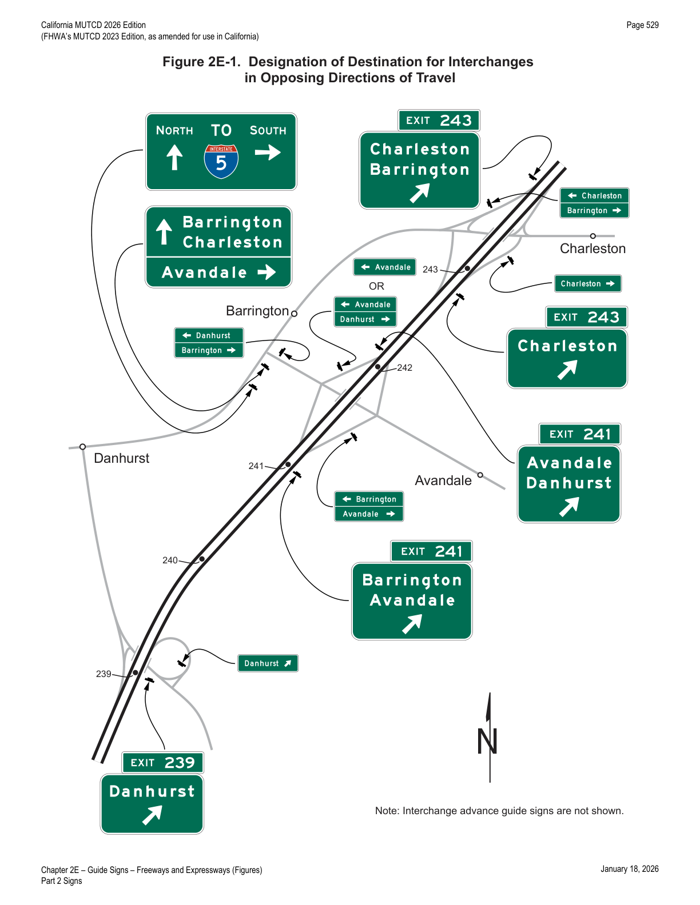
2E.08General
- 01Effective signs are legible to approaching road users and readable/comprehensible in the viewing time provided to permit proper responses. Desired design characteristics include: (a) long visibility distances; (b) large lettering, symbols, and arrows; and (c) short legends.
2E.09Color of Guide Signs
- 01Guide signs on freeways and expressways, except as otherwise provided in this Manual, shall have white letters, symbols, arrows, and borders on a green background.
- 02Color requirements for route signs and trailblazers; for signs with blank-out or changeable messages; for services, rest area, and park/recreational area signs; and for certain miscellaneous signs are provided in the individual Sections dealing with the particular sign or sign group.
2E.10Retroreflection or Illumination
- 01Letters, numerals, symbols, arrows, and borders of all guide signs shall be retroreflective. The background of all guide signs that are not independently illuminated shall be retroreflective.
- 02Where there is no serious interference from extraneous light sources, retroreflective post-mounted signs usually provide adequate nighttime visibility.
- 03On freeways/expressways where much night driving uses low-beam headlights, the headlight illumination incident to an overhead sign display is relatively small.
- 04Overhead sign installations should be illuminated (see Section 2A.21) unless an engineering study shows retroreflection alone will perform effectively. The type of illumination chosen should provide effective and reasonably uniform illumination of the sign face and message.
2E.11Interchange Classification
- 01For signing purposes, interchanges are classified as major, intermediate, and minor (minimum letter/numeral sizes by classification are in Tables 2E-2 and 2E-4): (A) Major interchanges are subdivided into (a) interchanges with other expressways/freeways, or (b) interchanges with high-volume multi-lane highways, principal urban arterials, or major rural routes where interchanging traffic volume is heavy or includes many unfamiliar road users. (B) Intermediate interchanges are those with urban/rural routes not in the major or minor category. (C) Minor interchanges include those with local, very light traffic, such as land service access roads; where the sum of exit volumes is estimated below 100 vehicles per day in the design year, the interchange is classified as minor.
2E.12Size of Signs and Letters
- 01Except as provided in Section 2A.07, the sizes of freeway and expressway guide signs that have standardized designs shall be as shown in Table 2E-1.
- 02Section 2A.07 contains information regarding the applicability of the various columns in Table 2E-1.
- 03Signs larger than those shown in Table 2E-1 may be used (see Section 2A.07).
- 04The nominal loop height of lower-case letters shall be ¾ of the initial upper-case letter height (see Paragraph 3 of Section 2D.05). Other word legends (cardinal directions, action messages, special characters) shall be all upper-case with a minimum letter height of 8 inches. Interline and edge spacing shall be per Section 2E.13.
- 05For all freeway/expressway signs without a standardized design, message dimensions shall be determined first, then outside sign dimensions. Minimum numeral/letter sizes for expressway guide signs by interchange classification, sign type, and legend component shall be per Tables 2E-2 and 2E-3; for freeway guide signs, per Tables 2E-4 and 2E-5. Minimum sizes for overhead-mounted expressway and freeway guide signs shall be per the "Overhead" columns of Tables 2E-2 and 2E-4 respectively, except where a larger minimum is provided in the columns for the applicable interchange type.
- 06All names of places, streets, and highways on freeway/expressway guide signs shall be composed of lower-case letters with initial upper-case letters, using FHWA Standard Alphabet Series E (modified) per the "Standard Highway Signs" publication (Section 1A.05).
- 07Lettering size on freeway/expressway signs shall be the same for both rural and urban conditions.
- 08Sign size is determined primarily by message length and lettering size needed for legibility. Letter style/height and arrow design are standardized for freeway/expressway signs to assure uniform, effective application.
- 09Designs for upper- and lower-case FHWA Standard Alphabets, with recommended letter-spacing tables, are in the "Standard Highway Signs" publication (Section 1A.05).
- 10Freeway lettering sizes (Tables 2E-4 and 2E-5) should be used when expressway geometric design is comparable to freeway standards.
- 11Other sign letter size requirements not specifically identified elsewhere should be guided by these specifications; abbreviations should be kept to a minimum except as provided in Section 2E.16.
- 12A sign mounted over a particular lane might have to be limited in horizontal dimension to the lane width, so another sign can be placed over an adjacent lane; maintaining vertical clearance might further limit overhead sign/legend size.
2E.13Interline and Edge Spacing
- 01Interline spacing of upper-case letters should be approximately ¾ of the average upper-case letter height in adjacent lines.
- 02Spacings to the top/bottom borders should equal the average letter height of the adjacent line; lateral spacing to vertical borders should be essentially the height of the largest letter.
2E.14Sign Borders
- 01For guide signs larger than 120 x 72 inches, the border should be 2 inches wide; for smaller guide signs, 1.25 inches. On unusually large signs with oversized letter heights, route shields, or other legend elements, the border should be 2.5 inches wide and not exceed 3 inches. In all cases, border width should not exceed the stroke width of the principal legend lettering.
- 02Corner radii of sign borders should be approximately ⅛ of the minimum sign dimension on guide signs, except radii should not exceed 12 inches on any sign.
- 03The "Standard Highway Signs" publication (Section 1A.05) contains detailed information on border widths and corner radii for ranges of sign sizes.
- 04The sign material in the area outside of the corner radius may be trimmed.
2E.15Amount of Legend on Guide Signs
- 01No more than two destination names or street names should be displayed on any Interchange Advance Guide sign or Exit Direction sign. A city name and street name on the same sign should be avoided. Where two or three signs are placed on the same supports, destinations/street names should be limited to one per sign, or a total of three in the display. Sign legends should not exceed three lines of copy, exclusive of exit number and action/distance information.
- 02Where only one interchange serves a community, the intersecting street name is generally superfluous to the city name on Interchange Advance guide and Exit Direction signs. Where a community is served by multiple interchanges, the city name is typically displayed on a Community Interchanges Identification sign (Section 2E.52) or Next Exits sign (Section 2E.53), with each interchange then identified by its intersecting roadway name rather than the city name.
2E.16Abbreviations
- 01The use of abbreviations on freeway and expressway guide signs shall comply with Section 2D.07.
2E.17Symbols
- 01Symbols are not normally displayed on freeway/expressway guide signs. One exception is the PARK-RIDE Supplemental guide sign (Section 2E.51), which displays the Carpool symbol. In some cases, General Information symbols (Chapter 2H) might be included to shorten an unusually lengthy legend.
- 02When a General Information symbol is incorporated, all legend components should be balanced in size and arrangement for maximum legibility. The General Information (I series) sign, rather than the symbol alone, should be placed as a sign panel within the guide sign so the border provides adequate symbol recognition, positioned to the left of the legend it applies to, sized similarly to a route shield for that type of guide sign.
2E.18Arrows for Interchange Guide Signs
- 01Arrows used on interchange guide signs shall be of the types shown in Figure 2D-3 and shall comply with this Section and Section 2D.08.
- 02Except on Overhead Arrow-per-Lane guide signs (Section 2E.40) and Exit Direction signs for lane drops (Section 2E.28), and except as provided in Paragraph 5, directional arrows on all overhead and post-mounted Exit Direction signs shall point diagonally upward. Overhead Exit Direction sign arrows shall be on the side consistent with the exiting movement direction. Post-mounted Exit Direction sign arrows shall be at the bottom, centered under the legend.
- 03On overhead Exit Direction signs located fully over the tapered portion of the exit ramp at the theoretical gore, where a directional arrow to the side of the legend farthest from the roadway might create an unusually wide sign limiting the arrow's visibility, the arrow may be placed at the bottom, centered under the legend.
- 04Directional arrows on guide signs for multi-lane exits shall be positioned below the legend over the approximate center of each lane to which the arrow applies (see Figure 2E-38).
- 05Down arrows shall only be used on overhead signs to indicate a lane to be followed, positioned over the approximate center of each lane pointing vertically downward. Down arrows shall be used only on overhead guide signs that restrict specific lanes to traffic bound for the indicated destination(s)/route(s), and shall not be used unless an arrow can be located over and pointed to the approximate center of each usable lane.
- 06More than one down arrow pointing to the same lane on a single overhead sign (or multiple signs on the same structure) shall not be permitted.
- 06aRefer to Section 2B.38 and Figure 2B-10(CA) for sign options that allow trucks to legally use a lane other than the rightmost lane, accomplished by placing the TRUCKS (R70A(CA)) and OK (R70B(CA)) sign panels adjacent to a down arrow.
- 07Directional and down arrows for guide signs are shown in Figure 2D-3. Detailed drawings and standardized sizes based on letter-height ranges are in the "Standard Highway Signs" publication (Section 1A.05), including dimensions for Overhead Arrow-per-Lane and Diagrammatic Advance guide signing.
2E.19Overhead Sign Installations
- 01Specifications for structural supports for signs have been standardized by AASHTO. Overcrossing structures can often support overhead signs and might in some cases be the only practical location providing adequate viewing distance, eliminating the need for additional roadside sign supports. Conditions warranting overhead sign installation are given in Section 2A.14 and throughout this Chapter. Vertical clearance is discussed in Section 2A.15.
2E.20Lateral Offset
- 01Except where shielded by a rigid traffic barrier, the minimum lateral offset outside the usable roadway shoulder for post-mounted freeway/expressway signs or overhead sign supports, either side of the roadway, shall be 6 feet (also applies outside a curb). If located within the clear zone, signs shall be mounted on crashworthy supports (see definition in Section 1C.02) or shielded by appropriate crashworthy barriers.
- 02Where practicable, a sign should not be less than 12 feet from the edge of the nearest traffic lane. Large guide signs especially should be farther removed, preferably 30 feet or more.
- 03Where an expressway median is 12 feet or less in width, consideration should be given to spanning both roadways without a center support.
- 04Where an overhead sign support cannot be placed sufficiently far from traffic, it should be designed to minimize impact forces or be adequately shielded by a suitably designed traffic barrier.
- 05Butterfly-type sign supports and other overhead non-crashworthy sign supports shall not be installed in gores or other unshielded locations within the clear zone.
- 06Lesser clearances, but generally not less than 6 feet, may be used on connecting roadways or ramps at interchanges.
- 07Refer to Section 2A.16 for additional information about lateral offset.
2E.21Interchange Guide Signs
- 01For some applications, guide signing for interchanges depends on the interchange classifications in Section 2E.11. Provisions on classification-based guide signing are found in Sections 2E.23 through 2E.26, 2E.46 through 2E.48, and 2E.51 through 2E.53.
- 02The signs at interchanges and on their approaches shall include Advance Interchange guide signs and Exit Direction signs. Consistent destination messages shall be displayed on these signs.
- 03New destination information should not be introduced into the major sign sequence for one interchange, nor should destination information be dropped.
- 04Guide signs placed in advance of an interchange deceleration lane should be spaced at least 800 feet apart.
- 05Use of Supplemental guide signing should be minimized per Section 2E.51.
- 06Figure 2E-2 shows a typical sequence of interchange guide signs.
- 07In some instances the interchange providing the most direct/preferred access to a destination might differ in opposing directions of travel due to crossroad configuration or a partial interchange.
- 08For each direction of travel, guide signing to a destination should be via the exit with the most direct or preferred access, even when this results in a destination being served by different interchanges for opposing directions of travel (see Figure 2E-1).
- 09Refer to Section 2D.31 for additional Interchange Guide signs.
- 10Exits should be identified on signs using street names, community names, control cities, and/or route markers.
- 11When an interchange provides more than one exit to the same street, cardinal direction identifiers should be included to distinguish between the exits.
- 12The Destination and Street Name with Arrow (G8(CA) series) signs may be used in freeway interchange areas.
2E.22Interchange Exit Numbering
- 01Interchange exit numbering shall use the reference location sign exit numbering method. The consecutive exit numbering method shall not be used. Exit numbers shall correspond to the posted Reference Location or Enhanced Reference Location signs.
- 02Reference location sign exit numbering assists road users in determining destination distances and travel mileage, assists reporting location during an incident/breakdown, assists responders, and assists agencies because the numbering sequence need not change when new interchanges are added.
- 03Interchange exit numbering provides valuable orientation on a freeway or expressway. Feasibility on an expressway depends largely on the extent grade separations are provided; where there is appreciable continuity of interchange facilities interrupted only by an occasional at-grade intersection, numbering helps the expressway user.
- 04Interchange exit numbering shall be used at each freeway interchange exit. Exit numbers shall be displayed with each Interchange Advance Guide sign, Exit Direction sign, and Exit Gore sign, on a separate plaque above and abutting the sign. The Exit Number (E1-5P series) plaque (Figure 2E-9) shall include the word EXIT(S) and the appropriate exit number(s) in a single-line format.
- 04aRest areas, vista points, weigh stations, HOV facility exits, and HOV-to-HOV system connector ramps are not considered interchange exits and shall not be assigned or signed with exit numbers.
- 05Suffix letters shall only be used to supplement exit numbers where more than one exit is associated with the same reference mile point — not for identifying a downstream ramp split providing access to multiple highways or directions. The suffix letter shall be included on the Exit Number plaque, separated from the exit number by a space of between ½ and ¾ of the suffix letter's height. Suffix letters shall be assigned in ascending alphabetical order starting with A in the direction of increasing exit numbers, and descending, ending in A, in the opposite direction. Exit numbers shall not include cardinal direction initials of the cross route. Minimum numeral/letter sizes shall be per Tables 2E-2 through 2E-5. If used, the expressway exit numbering system shall comply with the freeway provisions.
- 06Where suffix letters are used, an exit of the same number without a suffix letter shall not also be used on the same route in the same direction (e.g., if EXIT 256 A exists, there shall not also be a plain EXIT 256 on that route/direction).
- 07Exit numbering should be determined based on the crossroad's location relative to reference location signs: (A) a crossroad at/after Mile 15 and before Mile 16 → EXIT 15 (Figure 2E-3, Drawings A/B); (B) a crossroad split by direction where one direction is downstream of Mile 18 and the other upstream → EXIT 18 (Figure 2E-3, Drawings A/B); (C) three closely-spaced interchanges (less than 1 mile apart) starting before Mile 16 and ending near/at Mile 17 → EXIT 15, EXIT 16, EXIT 17; (D) multiple interchanges too closely spaced to designate by mainline reference mile → use suffix letters (Figure 2E-3, Drawings C/D).
- 08Exit numbers may also be used with Supplemental guide signs (Section 2E.51) and Motorist Service signs (Chapters 2I and 2J).
- 09Where exit suffix letters are used and the number of exits differs by direction of travel, suffix lettering for each direction shall be based on the number of exits in that direction — e.g., three northbound exits and two southbound exits for Mile 25 yields EXIT 25 A / 25 B / 25 C northbound, and EXIT 25 B then EXIT 25 A southbound (Figure 2E-3, Drawing D).
- 10Except as provided in Section 2E.36 for Collector-Distributor Roadways, exit numbers and suffix letters shall only designate individual exit departure points directly from the freeway mainline, not ramp splits into two ramps after leaving the mainline.
- 11The Exit Number (E1-5P) plaque shall be positioned above the top right-hand edge (above and abutting) of the sign for an exit to the right (see Figure 2E-9).
- 12Because road users might not expect an exit to the left and might have difficulty maneuvering left, a Left Exit Number (E1-5bP, E1-5fP to E1-5kP) plaque (Figure 2E-9) shall be added above the top left-hand edge (above and abutting) for all numbered left-hand exits (see Figures 2E-18 and 2E-34). The word LEFT shall be a black legend on a yellow rectangular sign panel, centered above the word EXIT.
- 13Example Exit Number plaque designs are in Figure 2E-9; incorporation on guide signs is illustrated in Figures 2E-9, 2E-9(CA), 2E-12, 2E-12(CA), 2E-14, 2E-35, 2E-36(CA), and 2E-41.
- 14Figure 2E-4 provides an example of Interstate route loops and spurs around major metropolitan areas; the general plan for numbering interchange exits is in Figures 2E-5 through 2E-8. Figure 2E-5 shows a circumferential route (a complete circle around a city, usually with two interchanges per mainline route). Figure 2E-6 shows a loop route (departs from and rejoins the same mainline route downstream; a three-digit Interstate route connecting two different Interstate routes is also defined as a loop). Figure 2E-7 shows a spur route (departs from a mainline route and never rejoins it). Figure 2E-8 shows two mainline routes that overlap.
- 15Regardless of whether a mainline route originates within a State or crosses in from an adjacent State, the southernmost or westernmost terminus within that State shall be the beginning point for interchange exit numbering.
- 16For circumferential routes, interchange exit numbering shall be clockwise, beginning with the first interchange west of the south end of an imaginary north-south line bisecting the route, at a radial freeway/Interstate route, or another conspicuous landmark near a south polar location (see Figure 2E-5).
- 17Interchange exit numbers on loop routes shall begin at the loop interchange nearest the south or west junction and increase toward the north or east junction (Figure 2E-6).
- 18Spur route interchanges shall be numbered in ascending order starting at the interchange where the spur leaves the mainline (Figure 2E-7).
- 19If a circumferential, loop, or spur route crosses State boundaries, the numbering sequence shall be coordinated by the States for continuity.
- 20Where numbered routes overlap, continuity of interchange exit numbering shall be established for only one of the routes (Figure 2E-8); if one route is an Interstate and the other is not, the Interstate route shall maintain numbering continuity.
- 20aRefer to FHWA's List of Known Errors for an error in Paragraph 20 text. Refer to Section 1A.04 for more details.
- 21The route chosen for continuity of interchange exit numbering should also have reference location sign continuity (see Figure 2E-8).
- 22Caltrans shall utilize mileage-based interchange exit numbering to identify the location of each interchange exit on the California Freeway System. A statewide listing of freeway exit numbers, indexed by route and direction, shall be available at dot.ca.gov/programs/safety-programs/exit.
- 23The placement and location of interchange exit numbers on State highways shall conform to the database maintained by Caltrans' Division of Safety Programs for reference posts — distinct from the TASAS Highway database.
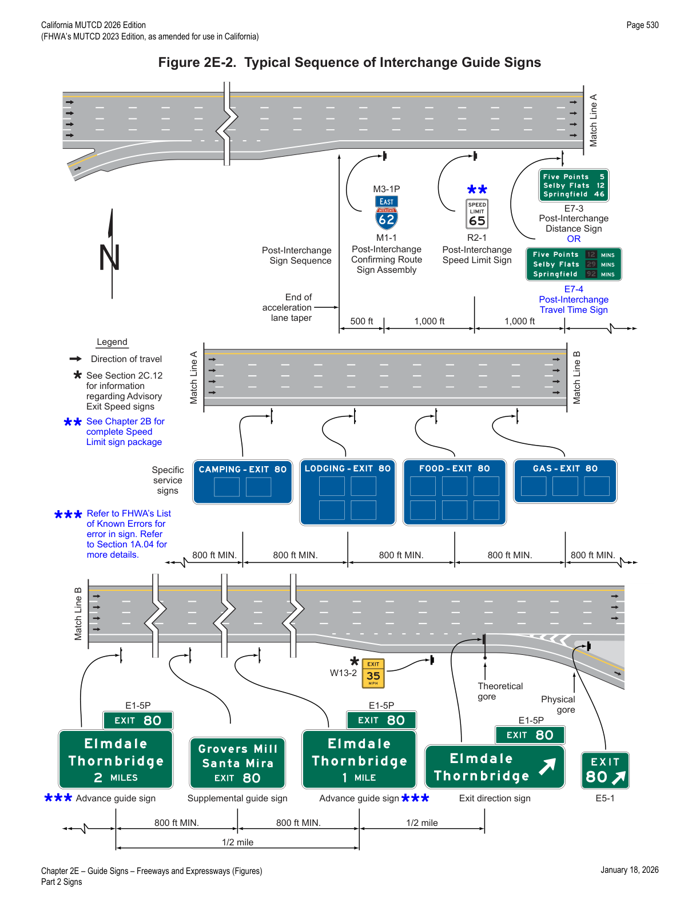
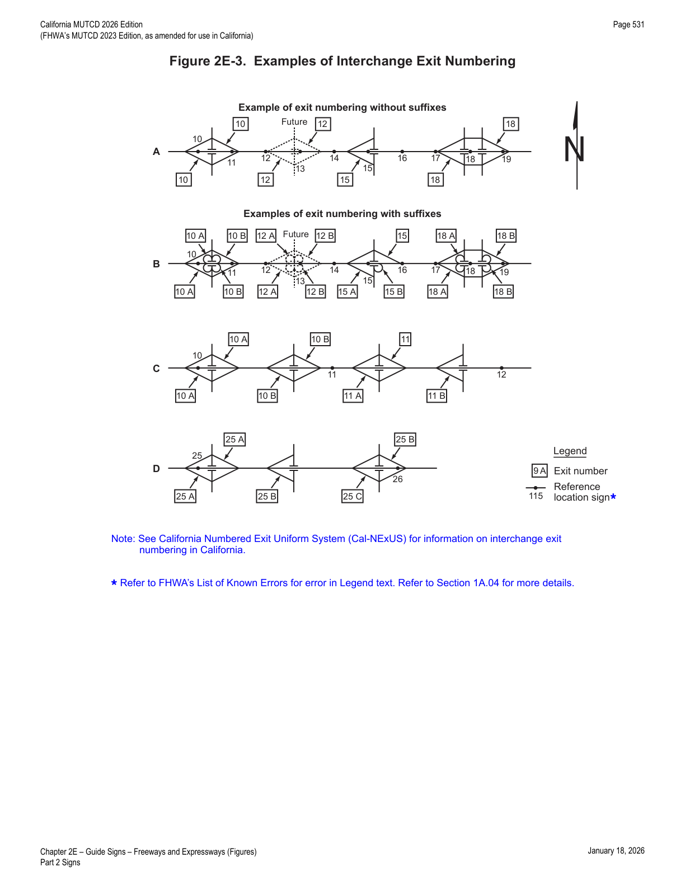
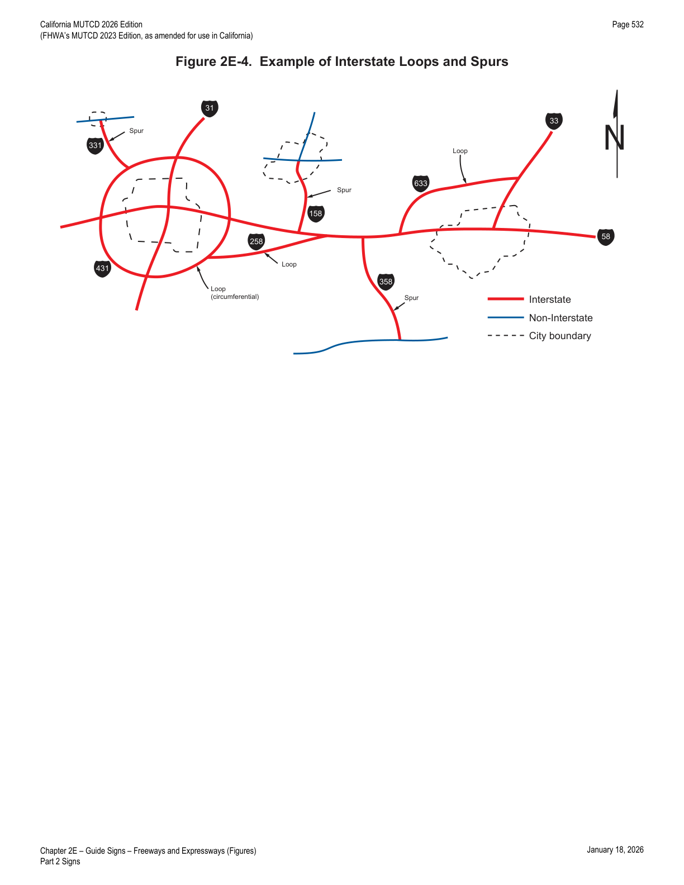
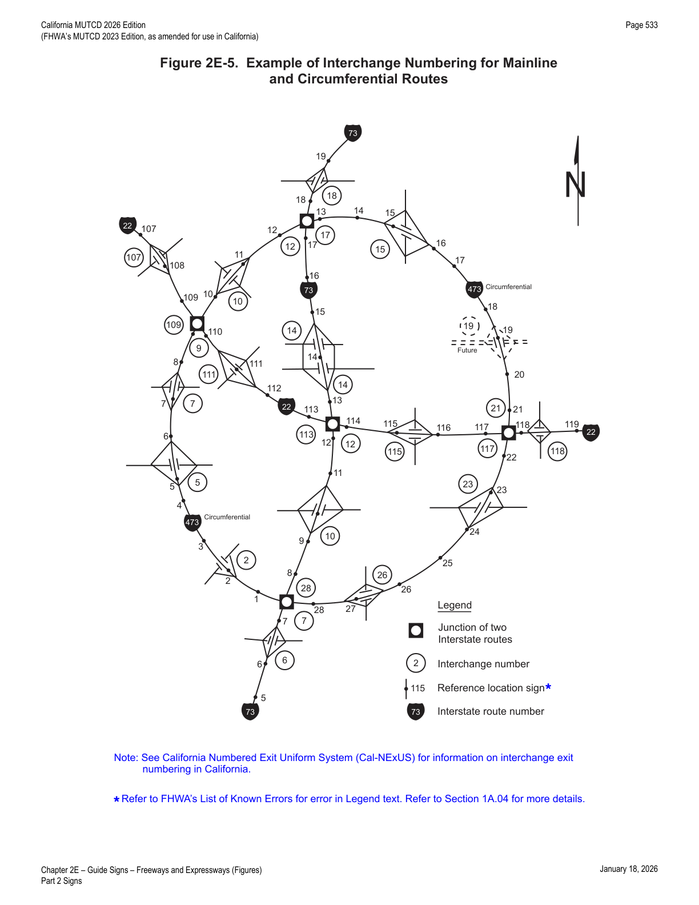
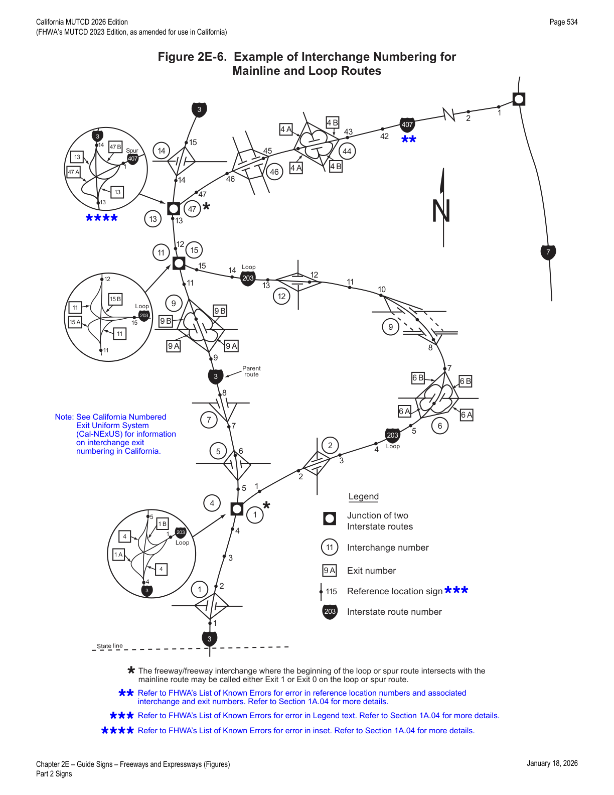
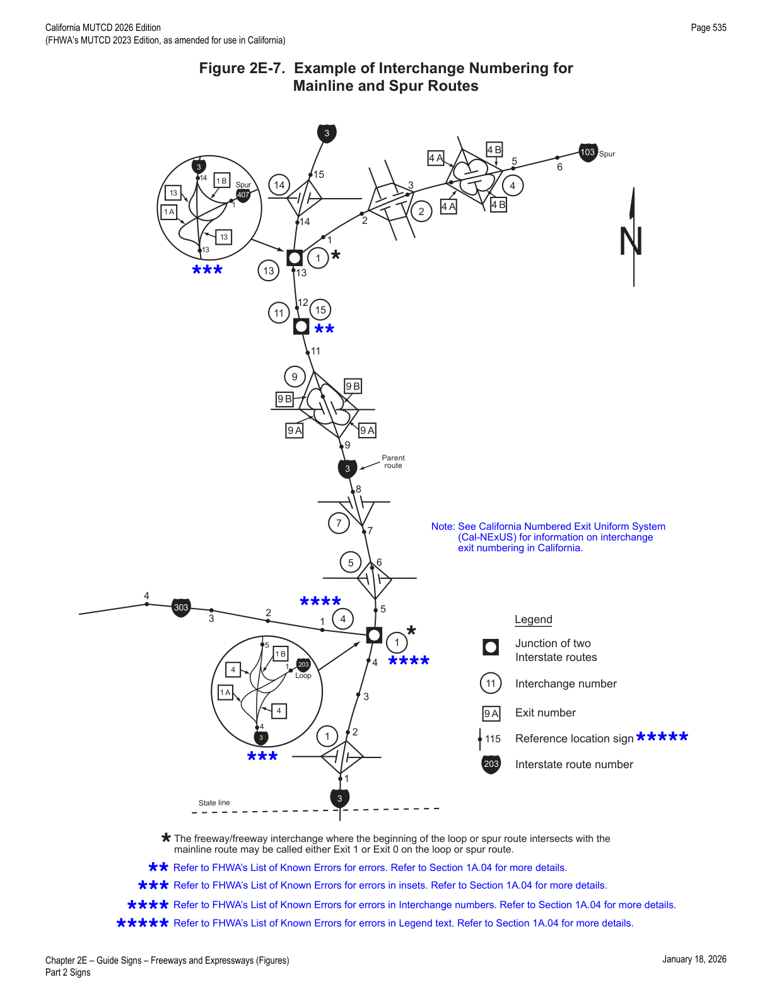
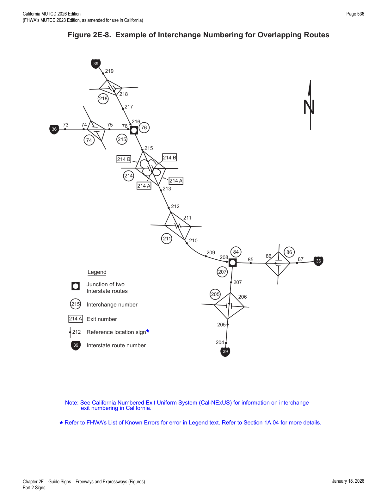
2E.23Interchange Advance Guide Signs (E1-1 through E1-3)
- 01An Interchange Advance guide sign (Figure 2E-9 and Figure 2E-9(CA)) gives notice well in advance of the exit point of the principal destinations served by the next interchange and the distance to that interchange.
- 02Except as provided in Paragraph 16 of this Section and Paragraph 18 of Section 2E.25, at least one Interchange Advance guide sign shall be used for all interchange classifications.
- 03At major and intermediate interchanges (Section 2E.11), at least two Interchange Advance guide signs should be used, at ½ mile and 1 mile in advance; a third at 2 miles in advance if spacing permits.
- 04At minor interchanges, the Interchange Advance guide sign should be located ½ to 1 mile from the exit gore.
- 05Sections 2E.29 through 2E.44 contain additional provisions on number, location, and mounting of Interchange Advance guide signs for certain interchange configurations.
- 06Except as provided in Section 2E.28, the legend on Interchange Advance guide signs shall contain the distance message, matching the Exit Direction sign legend for each direction of travel except the last line is the distance message. The distance message shall read XX MILE(S) where exit numbers are used; where not used, EXIT XX MILE(S) for a single-ramp interchange, or EXITS XX MILE(S) for two or more exit ramps.
- 07Where an Interchange Advance guide sign is more than 1,000 feet to ½ mile but not more than 1 mile from the exit, the distance displayed should be to the nearest ¼ mile. Where 1,000 feet or less, distance should be displayed in feet to the nearest 100 feet.
- 07aRefer to FHWA's List of Known Errors for an error in Paragraph 7 text. Refer to Section 1A.04 for more details.
- 08When a distance is displayed in miles, fractions (not decimals) shall be displayed in all cases.
- 09For numbered exits, the exit number used with Interchange Advance guide signs shall be displayed using an Exit Number plaque above and abutting the sign.
- 10For numbered exits to the right, an Exit Number (E1-5P through E1-5eP) plaque (Figure 2E-9) shall be added to the top right-hand edge (above and abutting).
- 11For numbered exits to the left, a Left Exit Number (E1-5fP through E1-5kP) plaque (Figure 2E-9) shall be added above the top left-hand edge (above and abutting) (see Figures 2E-18 and 2E-34).
- 12For unnumbered exits to the left, a LEFT (E1-5mP) plaque (Figure 2E-9) shall be added to the top left-hand edge, abutting the sign.
- 13Section 2E.22 contains additional information regarding exit numbering.
- 14Interchange Advance guide signs for multi-lane exits having an optional exit lane that also carries the through route at major interchanges (Figures 2E-36, 2E-36(CA), 2E-37, and 2E-42) and for splits with an option lane (Figures 2E-38 and 2E-39) shall be Overhead Arrow-per-Lane signs designed per Sections 2E.39 and 2E.40.
- 15Where the distance between interchanges is more than 1 mile but less than 2 miles, the first Interchange Advance guide sign may be closer than 2 miles but not overlap the signing for the preceding exit. Duplicate Interchange Advance guide or Interchange Sequence Series signs may be placed in the median on the opposite side and are not included in the minimum signing requirements.
- 16Where there is less than 800 feet between the theoretical gores of successive interchange entrance/exit ramps, Interchange Sequence Series signs (Section 2E.24) should be used instead of Interchange Advance guide signs for the affected interchanges.
- 17The Interchange Advance guide signs for the last exit before a highway becomes a tolled facility should include the LAST EXIT BEFORE TOLL (W16-16P) plaque (Section 2F.10 and Figure 2F-4), installed above the Interchange Advance guide signs but below the Exit Number or LEFT plaque, if used.
- 18The W16-16P plaque may be formatted as a header panel within the guide sign.
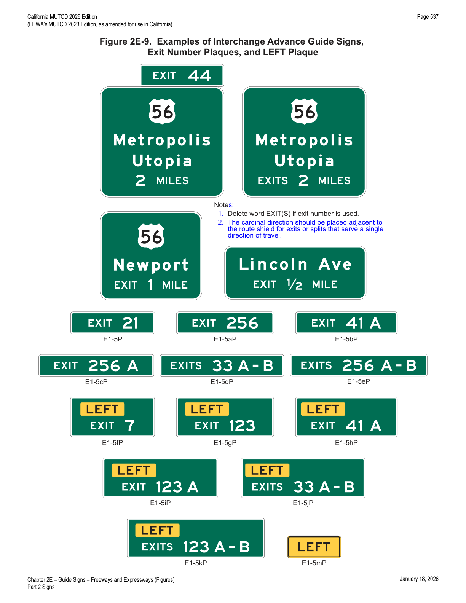
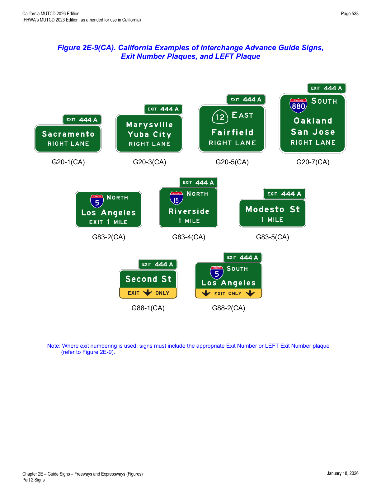
2E.24Interchange Sequence Signs (E9-1 and E9-2)
- 01Interchanges are sometimes closely spaced, particularly through large urban areas, so typical guide signs cannot be adequately spaced. Interchange Sequence signs identifying the next two (E9-1 or G23-7(CA)) or three (E9-2) interchanges (Figure 2E-10 and 2E-10(CA)) can provide the necessary exit destination guidance.
- 02Where there is less than 800 feet between the theoretical gores of successive interchange entrance/exit ramps, Interchange Sequence signs should be used instead of Interchange Advance guide signs for the affected interchanges.
- 03If used, Interchange Sequence (E9-1 or E9-2) signs should be used over the entire length of a route in an urban area.
- 04Interchange Sequence signs generally supplement Interchange Advance guide signs. Signing of this type is illustrated in Figure 2E-11 and is compatible with the sign spreading concept (Paragraph 3 of Section 2E.43).
- 05Interchange Sequence signs shall be installed in a series and shall display the next two or three interchanges by name or route number with distances to the nearest ¼ mile.
- 06The first Interchange Sequence sign in the series shall be located in advance of the first Interchange Advance guide sign for the first interchange.
- 07Where the exit direction is to the left, a LEFT (E11-2) sign panel (see Figure 2E-17) shall be displayed on the same line immediately to the right of the interchange name or route number.
- 08Interchange Sequence signs shall not be substituted for Exit Direction signs.
- 09Interchange Sequence signs should be located in the median. After the first sign, subsequent signs should be placed approximately midway between interchanges.
- 10Interchange Sequence signs located in the median shall be installed at overhead sign height (see Section 2A.14).
- 10aRefer to FHWA's List of Known Errors for an error in Paragraph 10 text. Refer to Section 1A.04 for more details.
- 11Interchange numbers may be displayed to the left of the interchange name or route number.
- 11aRefer to FHWA's List of Known Errors for an error in Paragraph 11 text. Refer to Section 1A.04 for more details.
- 12The Interchange Sequence (G23-7(CA)) sign (Figure 2E-10(CA)) may be used to display two successive interchanges when one includes a cross street with different names on opposite sides of the freeway. A horizontal white line may separate the exits for the two interchanges; for the interchange with two exit names, the names may be combined and shown with a single distance, placed above or below the separator.
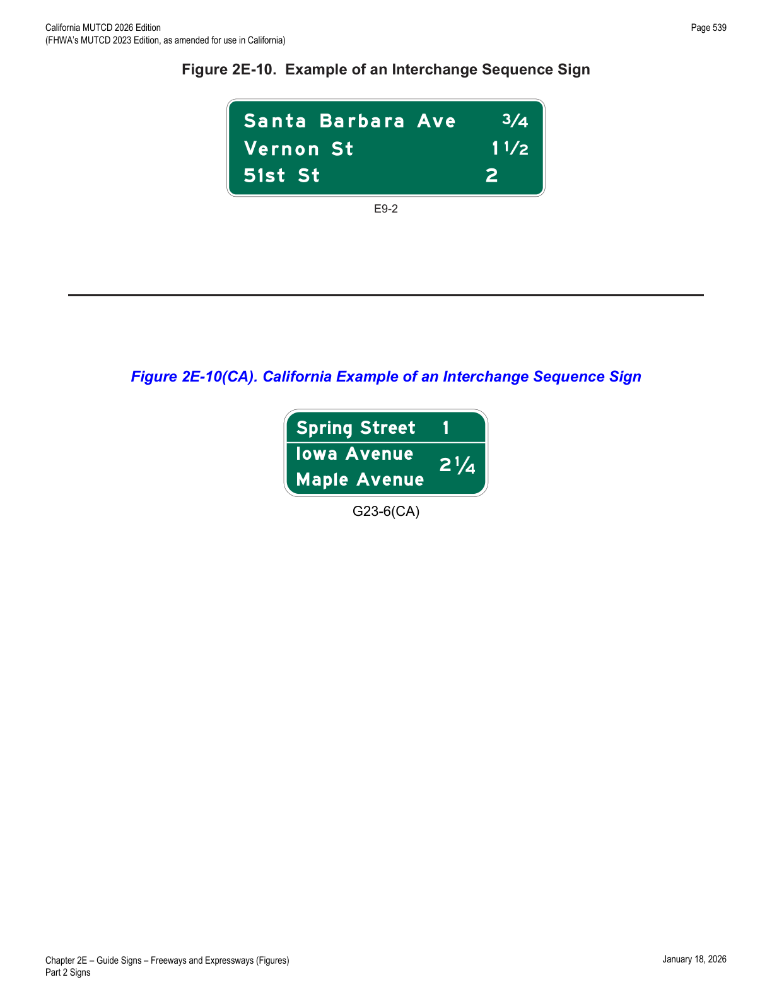
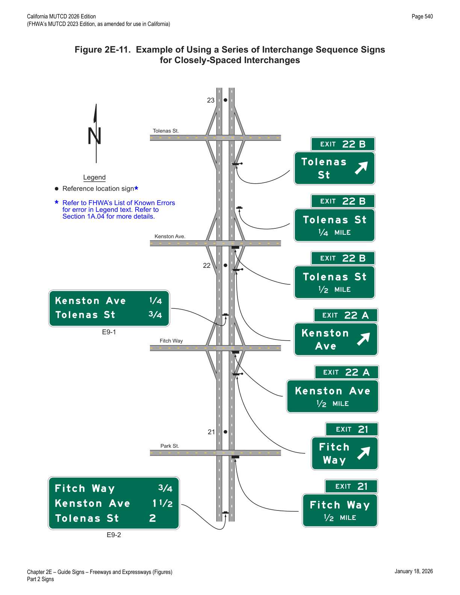
2E.25Exit Direction Signs (E4 Series)
- 01The Exit Direction sign (Figure 2E-12 and 2E-12(CA)) repeats the route and destination information displayed on the Interchange Advance guide sign(s) for the next exit, assuring road users of the destination served and whether they exit right or left.
- 02Exit Direction signs shall be used at major and intermediate interchanges. Populations or similar information shall not be displayed on Exit Direction signs.
- 03Exit Direction signs should be used at minor interchanges (Section 2E.30).
- 04Sections 2E.28, 2E.30, 2E.31, 2E.33 through 2E.35, 2E.38, and 2E.40 through 2E.42 illustrate use, location, and mounting of Exit Direction signs for certain interchange configurations. Placement depends on mounting type (post-mounted vs. overhead) and whether there is a deceleration lane (Figure 2E-13).
- 05When post-mounted, the Exit Direction sign should be installed at the beginning of the deceleration lane taper. When overhead, it should be installed over the exiting lane near the theoretical gore. If there is less than 300 feet from the taper's beginning to the theoretical gore, it should be installed overhead (see Figure 2E-13).
- 06Except where Overhead Arrow-per-Lane guide signs are used (Sections 2E.40 and 2E.42, and Paragraph 7), where a through lane is being terminated (dropped) at an exit, the Exit Direction sign shall be placed overhead at the theoretical gore (Figures 2E-18, 2E-19, 2E-33, 2E-42, and 2E-46).
- 07Except as provided in Paragraph 4 of Section 2E.40, where Overhead Arrow-per-Lane guide signs are used for the Interchange Advance guide sign(s) for a multi-lane exit having an optional exit lane that also carries the through route, or for a split with an option lane (Section 2E.40), an Overhead Arrow-per-Lane guide sign shall also be used instead of the Exit Direction sign, located near — but not downstream of — where the outside edge of the dropped lane begins to diverge (Figures 2E-36 through 2E-38), designed per Section 2E.40.
- 08Overhead Exit Direction signs shall: (A) display the Exit Number plaque (if used), route number, cardinal direction, and destination, with a diagonally upward-pointing directional arrow (Figure 2E-12 and 2E-12(CA)); (B) use the message EXIT ONLY in black on a yellow sign panel (E11-1d or E11-1e) to advise of a lane-drop situation (Figures 2E-18, 2E-19, 2E-42, and 2E-44), complying with Section 2E.28.
- 09For numbered exits to the right, an Exit Number (E1-5P through E1-5eP) plaque (Figure 2E-9) shall be added above the top right-hand edge (above and abutting).
- 10For numbered exits to the left, a Left Exit Number (E1-5fP through E1-5kP) plaque (Figure 2E-9) shall be added above the top left-hand edge (above and abutting).
- 11For unnumbered exits to the left, a LEFT (E1-5mP) plaque (Figure 2E-9) shall be added above the top left-hand edge (above and abutting).
- 11aThe ONLY (E11-1b) sign panel shall not be used without the EXIT (E11-1a) sign panel.
- 12Section 2E.22 contains additional information regarding exit numbering.
- 13At multi-exit interchanges, the Exit Direction sign should be located directly over the exiting lane for the first exit; an Interchange Advance guide sign for the second exit should be installed at the same location, normally over the right-hand through lane. Only where the through movement is not evident should a confirmatory Pull-Through sign (Figure 2E-16 and 2E-16(CA)) be used over the left-hand lane(s) (see Section 2E.43 on sign spreading).
- 14Where the freeway/expressway is on an overpass, the Exit Direction sign for the second exit should be installed on an overhead support over the exit lane in advance of the gore, as near as practicable to the theoretical gore. Where the freeway/expressway passes under the crossroad and the exit ramp is beyond the overcrossing structure, the overhead sign for the second exit should be placed on the overcrossing structure (Figures 2E-29 through 2E-31) or on a separate structure immediately in front of it.
- 15Where extra emphasis of an especially low advisory ramp speed is needed, an Exit Direction Advisory Speed (E13-2) sign panel (Figure 2E-14) may be placed at the bottom of the Exit Direction sign to supplement, not replace, the exit/ramp advisory speed warning signs.
- 16Warning Beacons complying with Paragraph 17 may be used with the E13-2 sign panel.
- 17Where Warning Beacons are used with the E13-2 sign panel within a guide sign (Figure 2E-14), the nearest edges of the beacons shall be placed at least 12 inches from the edges of the E13-2 sign panel, the guide sign, and any other legend within the guide sign. Warning Beacon design/operation shall otherwise comply with Chapter 4S.
- 18Where sight distance is restricted by structures or unusual alignment (principally in urban areas), making it impossible to locate the Exit Direction sign without violating minimum spacing between major guide signs (Section 2E.23), Interchange Sequence signs (Section 2E.24) may be substituted for an Interchange Advance guide sign.
- 19At the last exit before a highway becomes a tolled facility, the LAST EXIT BEFORE TOLL (W16-16P) plaque (Section 2F.10 and Figure 2F-4) should be installed above the Exit Direction sign, but below the Exit Number or LEFT plaque, if used.
- 20The W16-16P plaque may be formatted as a header panel within the guide sign.
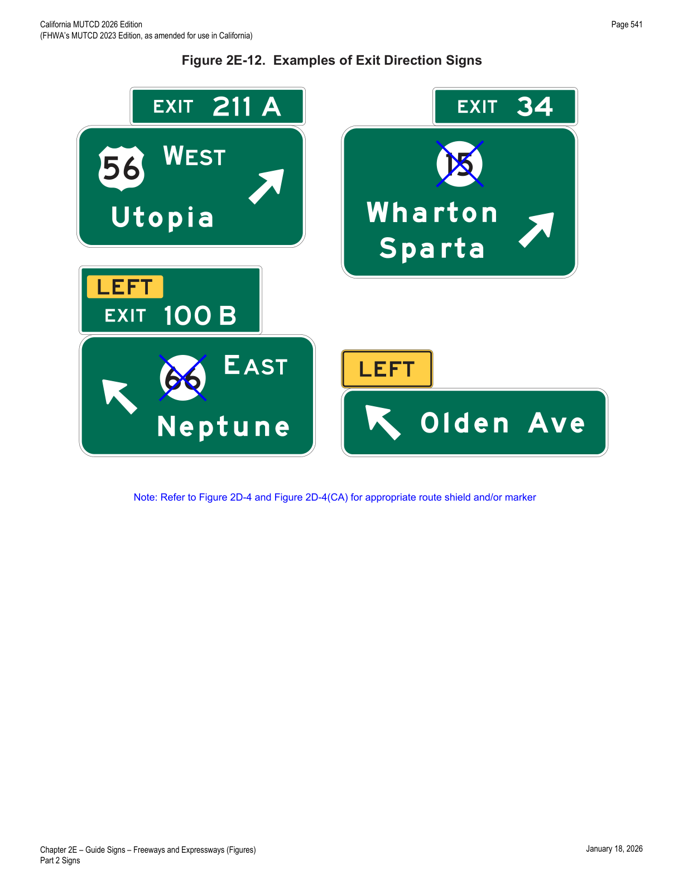
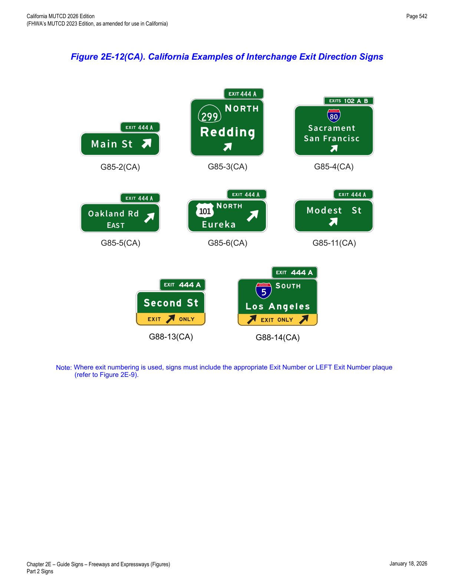
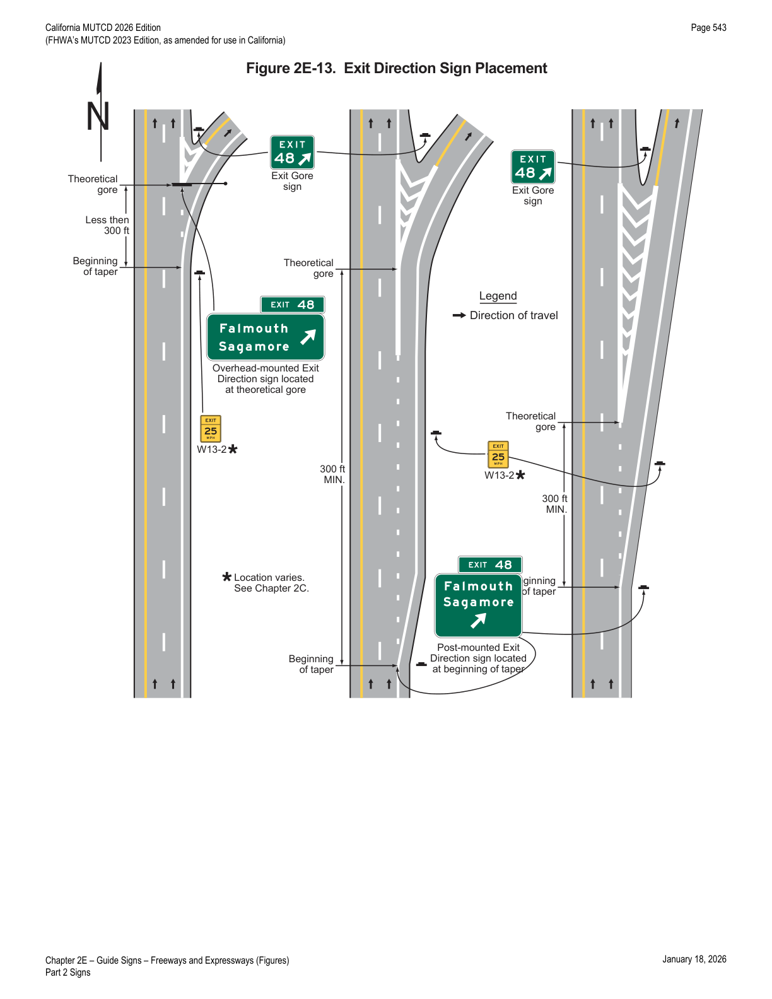
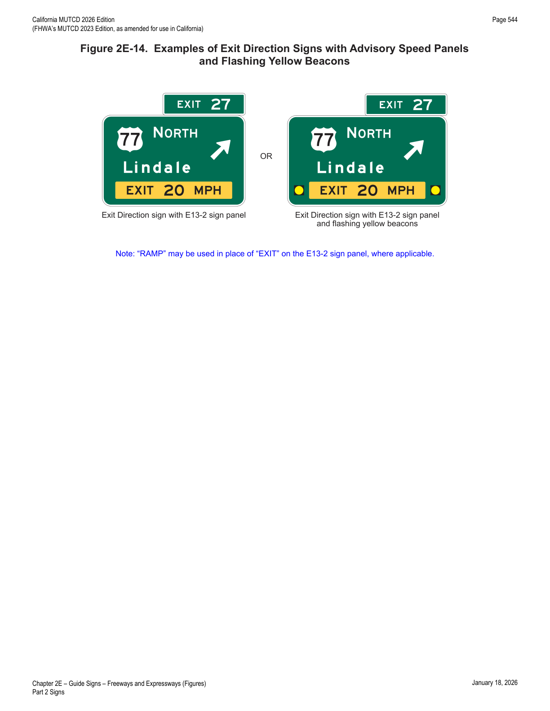
2E.26Exit Gore Signs and Plaque (E5-1 Series)
- 01The Exit Gore sign (Figure 2E-15) in the gore indicates the exiting point or place of departure from the main roadway. Consistent application at each exit is important for adequate visibility of the exit roadway's departure.
- 02The gore is the area between the main roadway and the ramp just beyond where the ramp branches off. An Exit Gore sign shall be located in the gore for each ramp departing the main roadway (or a collector-distributor roadway), displaying the word EXIT (E5-1) if exit numbering is not used, or EXIT XX (E5-1a or E5-1c) if used, plus an appropriate diagonally upward-pointing arrow. If suffix letters are used at a multi-exit interchange, the suffix letter shall also be included on the Exit Gore (E5-1a or E5-1c) sign or Exit Gore Number (E5-1bP) plaque, separated from the exit number by a space between ½ and ¾ of the suffix letter's height. Breakaway or yielding supports shall be used.
- 03The arrow should be aligned to approximate the angle of departure. Each gore should be treated similarly, whether the interchange has one or multiple exits.
- 04The Narrow Exit Gore (E5-1c) sign (Figure 2E-15) may be used in gore areas of limited width where the Exit Gore (E5-1a) sign would not permit sufficient lateral offset (Section 2A.16), such as ramps nearly parallel to the main roadway mounted on a narrow island/barrier. Where the E5-1c sign is mounted at 14 feet or more from the roadway, the directional arrow may point diagonally downward.
- 05The E5-1c sign should not be used in gore areas where an E5-1a sign could be installed with sufficient lateral offset.
- 06Where extra emphasis of an especially low advisory ramp speed is needed, the Confirmation Advisory Speed (W13-1aP) plaque (Section 2C.59) may be mounted below the Exit Gore sign (Figure 2E-15) to supplement, not replace, the exit/ramp advisory speed warning signs.
- 07To improve gore visibility for exiting drivers, a Type 1 object marker (Chapter 2C) may be installed 4 feet above the ground line on each sign support below the Exit Gore sign.
- 08An Exit Gore Number (E5-1bP) plaque (Figure 2E-15) may be installed above an existing Exit Gore (E5-1) sign when an unnumbered exit is converted to numbered, until the E5-1 sign is replaced for other reasons (see Paragraph 9).
- 09An Exit Gore (E5-1a) sign shall be used when replacement of an existing E5-1 sign and E5-1bP plaque assembly becomes necessary.
- 10An Exit Gore (E5-1a) sign shall replace an existing Exit Gore (E5-1) sign when an unnumbered exit is converted to a numbered exit.
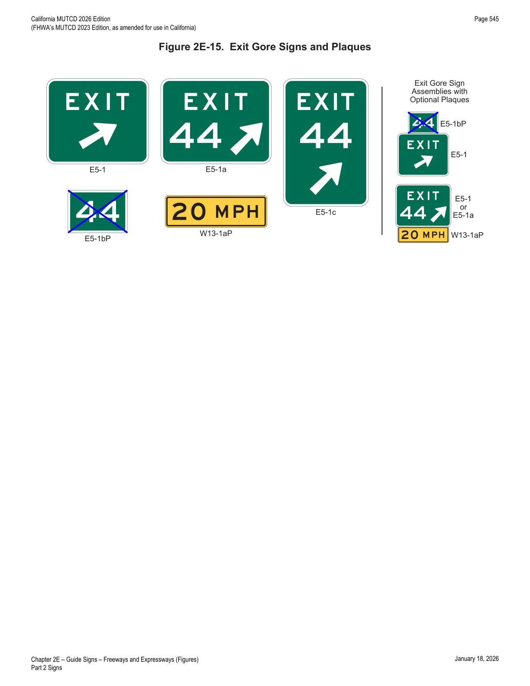
2E.27Pull-Through Signs (E6-1 Series and E6-2 Series)
- 01Pull-Through (E6-1 series and E6-2 series) signs (Figure 2E-16 and 2E-16(CA)) are overhead guide signs intended for through traffic.
- 02Pull-Through signs should be used where interchange geometrics make the through roadway unclear, or where additional route guidance is desired. Those with down arrows should be used where through-lane alignment is curved and the exit direction is straight ahead, where the number of through lanes is not readily evident, and at multi-lane exits with a reduction in through lanes. Pull-Through signs should not be used at exits with option lanes where full-width Overhead Arrow-per-Lane signs are used.
- 03When used, Pull-Through signs shall display the route shield and the cardinal direction for the through route.
- 04Pull-Through signs may display the control city and down arrows (Figure 2E-16, 2E-16(CA), and Section 2E.18).
- 04aPull-Through signs may also display the control city and LEFT/RIGHT __ LANES legend instead of down arrows (Figure 2E-16(CA)).
- 05Sections 2E.28, 2E.39, and 2E.40 contain information on Overhead Arrow-per-Lane guide signs at multi-lane exits with a reduction in through lanes and a through lane becoming an interior option lane.
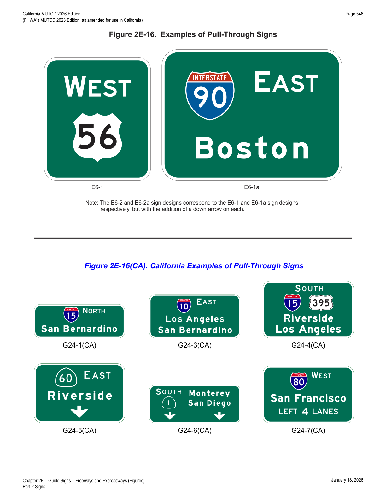
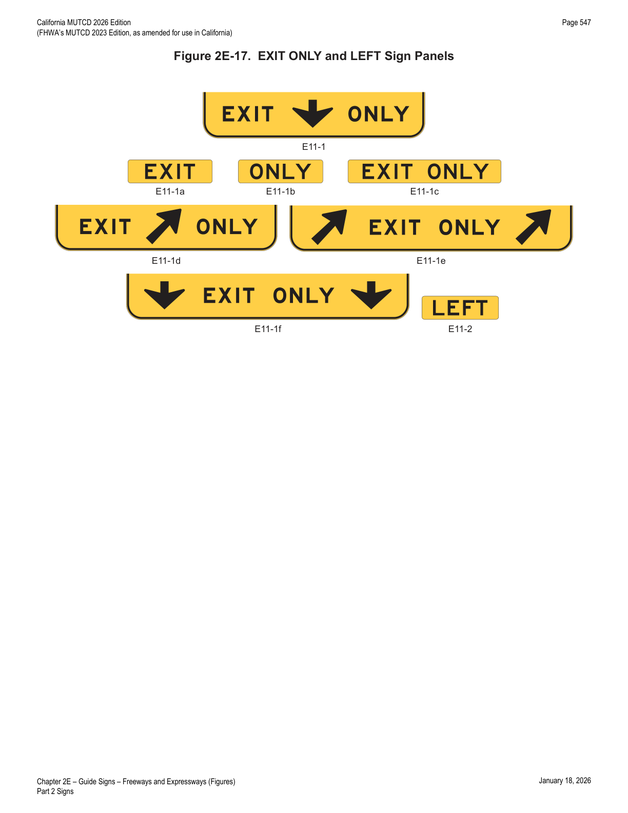
2E.28Signing for Interchange Lane Drops Without an Optional Exit Lane
- 01This Section applies only to lane drops at exits without an optional exit lane; where an exit has an optional exit lane in addition to the dropped lane, Sections 2E.39 through 2E.42 apply.
- 01aRefer to FHWA's List of Known Errors for an error in Paragraph 1 text. Refer to Section 1A.04 for more details.
- 02Except as provided in Paragraph 15, major guide signs for all lane drops at interchanges shall be mounted overhead. An EXIT ONLY sign panel shall be used for all interchange lane drops where the through route is carried on the main roadway.
- 02aRefer to FHWA's List of Known Errors for an error in Paragraph 2 text. Refer to Section 1A.04 for more details.
- 03Except on Overhead Arrow-per-Lane and Diagrammatic Advance guide signs (Sections 2E.39–2E.41), the EXIT ONLY (down arrow) (E11-1 or E11-1f) sign panel (Figure 2E-17) shall be used on all overhead Advance guide signs of lane drops (Figures 2E-18, 2E-19, and 2E-34); the number of arrows shall correspond to the number of dropped lanes; arrow placement shall comply with Section 2E.18.
- 04For lane drops, the bottom portion of the overhead Exit Direction sign shall be yellow with a black border and shall include a diagonally upward-pointing black directional arrow (left or right, as appropriate) for each dropped lane (Figures 2E-18 and 2E-19), positioned over the approximate center of each dropped lane. Except as provided in Paragraph 5, the words EXIT and ONLY shall be positioned left and right of the arrow, respectively, on the E11-1d sign panel (Figure 2E-17) for a single-lane drop; for a two-lane drop, EXIT ONLY shall be located between the two arrows on the E11-1e sign panel. The number of arrows shall correspond to the number of dropped lanes.
- 04aThe ONLY (E11-1b) sign panel shall not be used without the EXIT (E11-1a) sign panel.
- 05Where existing sign structure length or adjacent signs constrain width/placement, the down arrow may be positioned to the right or left of the words EXIT ONLY instead of between them, to allow positioning over the lane center. Where the Exit Direction sign width extends over the adjacent lane, the arrow may be placed to the right (exit right) or left (exit left) of EXIT ONLY to allow positioning over the dropped lane.
- 06EXIT ONLY messages using either the combination of E11-1a and E11-1b, or the E11-1c sign panel (Figure 2E-17), may be used to retrofit existing signing to warn of a lane drop situation ahead.
- 07If used to retrofit an existing guide sign, the E11-1a and E11-1b sign panels (Figure 2E-17) shall be placed on either side of a white down arrow on an Interchange Advance guide sign, and on either side of a white directional arrow on an Exit Direction sign. The E11-1c sign panel, if used to retrofit an existing Interchange Advance guide sign, shall be placed between the lower destination message and the white down arrow.
- 07aThe ONLY (E11-1b) sign panel shall not be used without the EXIT (E11-1a) sign panel.
- 08Except as provided in Paragraph 9 for an auxiliary lane, Interchange Advance guide signs for lane drops within 1 mile of the interchange should not display the distance message.
- 09Where the dropped lane is an auxiliary lane between successive entrance and exit ramps of two separate interchanges less than 1 mile apart, the first Interchange Advance guide sign in the sequence downstream from the entrance ramp should display the distance message (Figures 2E-20 and 2E-21).
- 10Where the dropped lane carries the through route, signs should be used without the EXIT ONLY sign panel.
- 11Figures 2E-20 and 2E-21 show examples of guide signs for a dropped auxiliary lane between separate interchanges using post-mounted and overhead guide signs, respectively. Figure 2E-22 shows guide signs used for an auxiliary lane that is ½ mile or longer.
- 11aRefer to FHWA's List of Known Errors for an error in Paragraph 11 text. Refer to Section 1A.04 for more details.
- 12Sections 2E.39 through 2E.42 contain information on signing lane drops at exits that also have an option lane.
- 13Section 2B.31 contains information on regulatory signs for freeway lane drop situations; Section 2C.50 contains information on warning signs for freeway lane drop situations.
- 14In limited cases so constrained that it is impossible to locate an Interchange Advance guide sign either overhead or partly over the dropped lane (precluding down-arrow positioning per Paragraph 3), a sign panel with the legend RIGHT (LEFT) LANE ONLY in black on yellow should be substituted for the EXIT ONLY panel; such signs should be alternated with RIGHT (LEFT) LANE FOR EXIT ONLY (W9-7) signs (Section 2C.50).
- 15Where a mainline lane is terminated immediately after an exit ramp, overhead and/or post-mounted warning signs should be used to warn traffic as shown in Figure 2E-23.
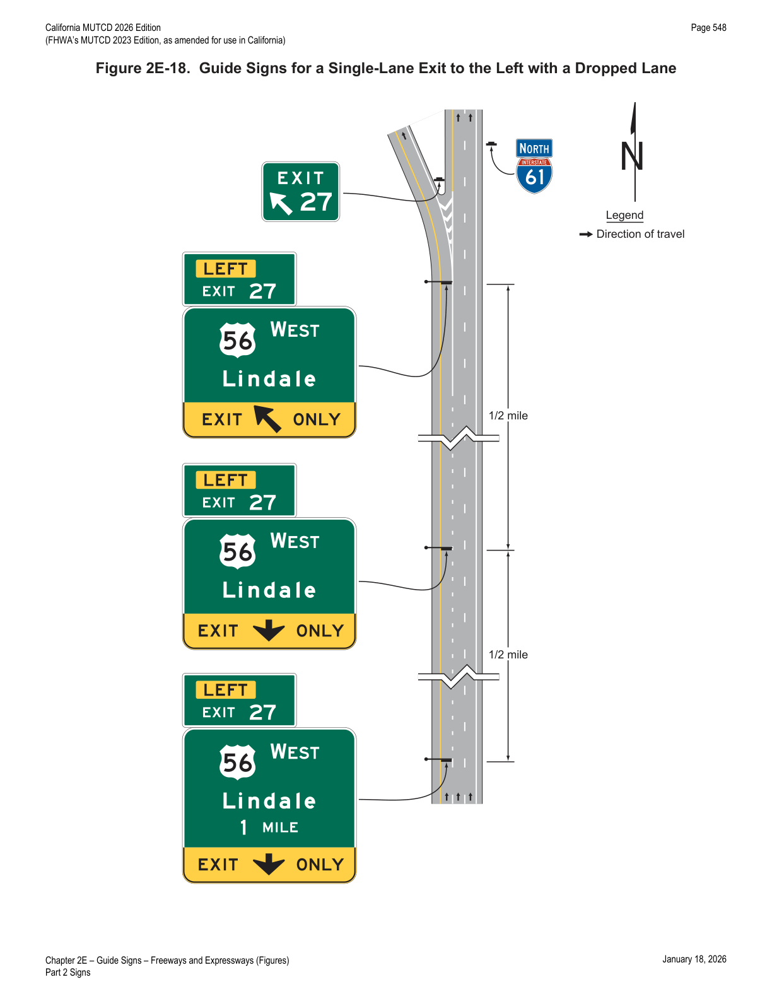
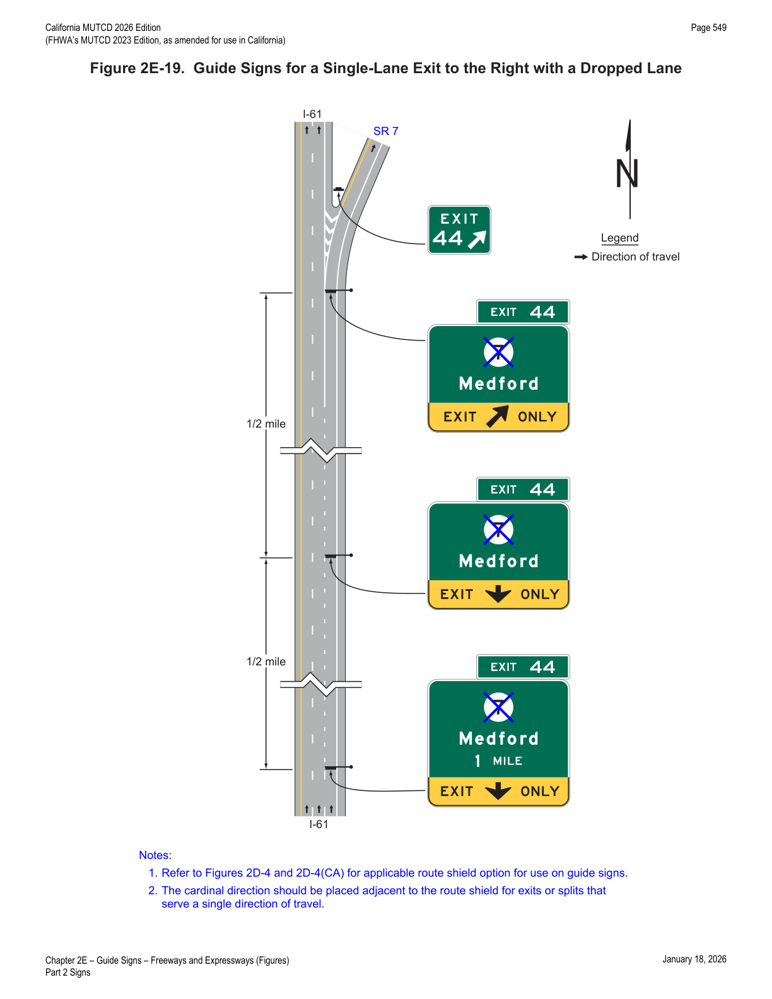
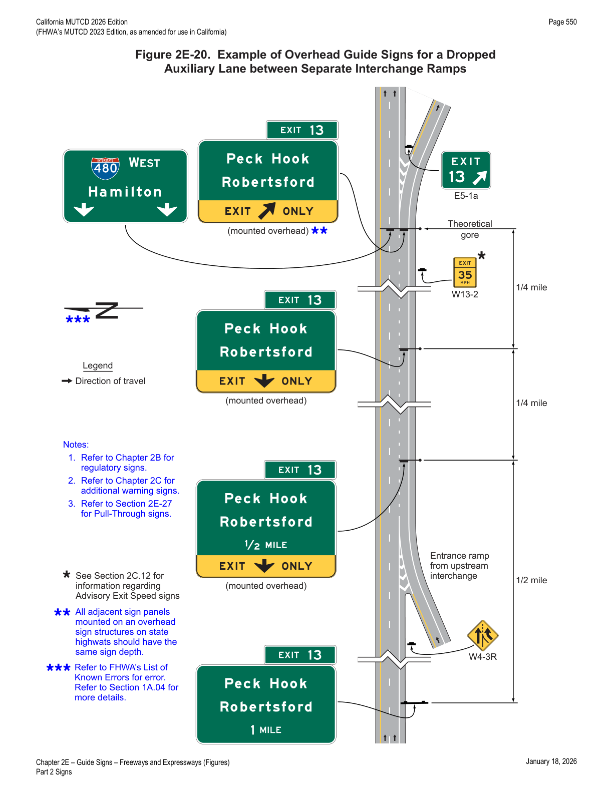
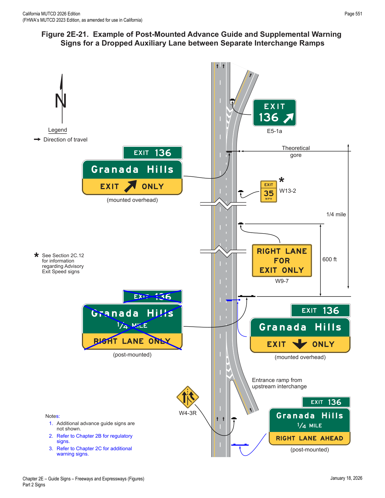
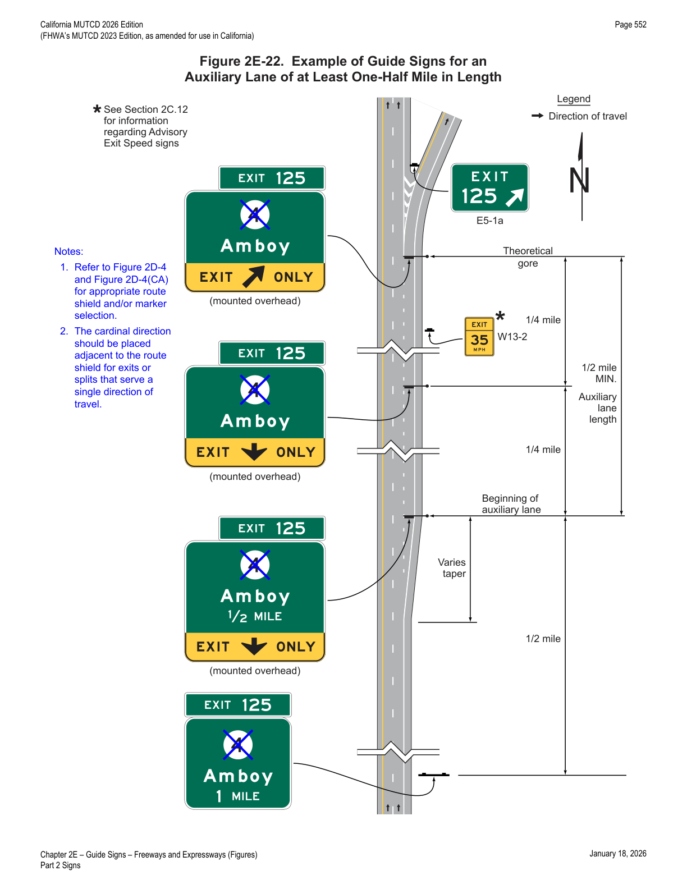
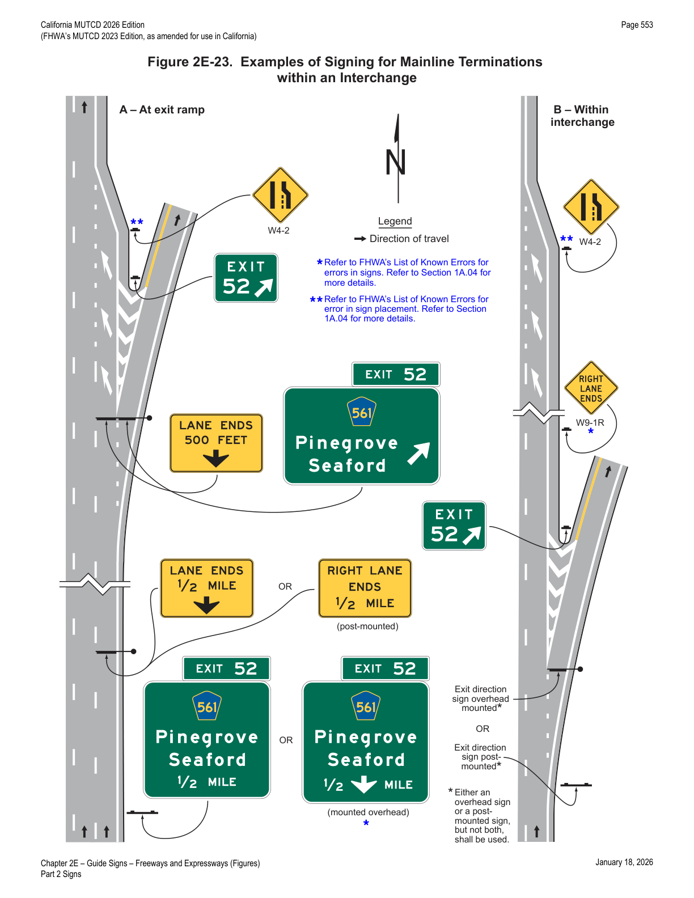
2E.29Signing by Type of Interchange
- 01Road users need signs to identify the exit location and to obtain route, direction, and destination information for specific exit ramps. Figures 2E-26 through 2E-33 show examples of guide signs for common interchange types (illustrating only the major guide signs for one direction of freeway/ramp traffic). Section 2D.49 contains information on signing crossroad approaches and connecting roadways to freeways/expressways.
- 02The signing layout for all interchanges of the same type should be similar; the significant features illustrated in Figures 2E-26 through 2E-33 should be followed as closely as possible even where unusual geometric features exist, keeping variations to a minimum.
- 03Where a single interchange combines a different ramp configuration type for each direction of travel, main roadway major guide signing should be determined by the specific interchange type for that direction.
- 04Figure 2E-24 shows an example of signing for a complex interchange combining intermediate interchange ramps within a major interchange.
- 05Figure 2E-25 shows an example of signing for an interchange exit ramp with a downstream split.
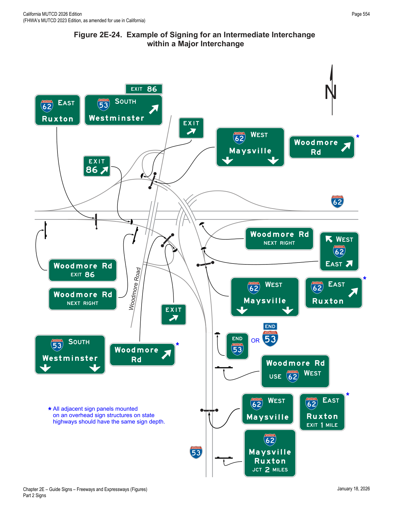
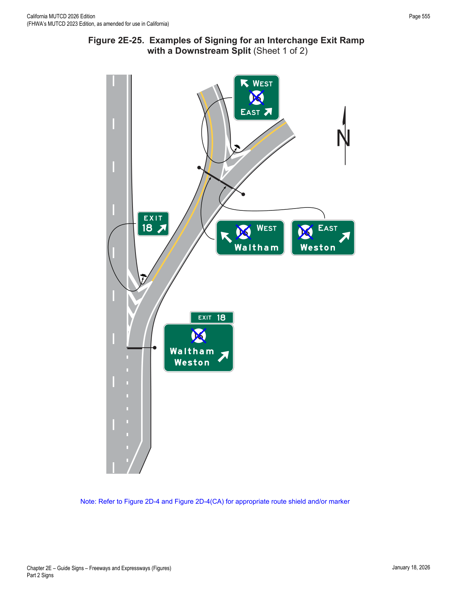
2E.30Minor Interchange
- 01Less signing may be used for minor interchanges because they customarily serve low volumes of mostly local traffic.
- 02An example of guide signs for a minor interchange is shown in Figure 2E-26.
- 02aRefer to FHWA's List of Known Errors for an error in Paragraph 2 text. Refer to Section 1A.04 for more details.
- 03In accordance with Sections 2E.23 and 2E.26, at least one Interchange Advance guide sign and an Exit Gore sign shall be used at a minor interchange.
- 04An Exit Direction sign complying with Section 2E.25 should also be used.
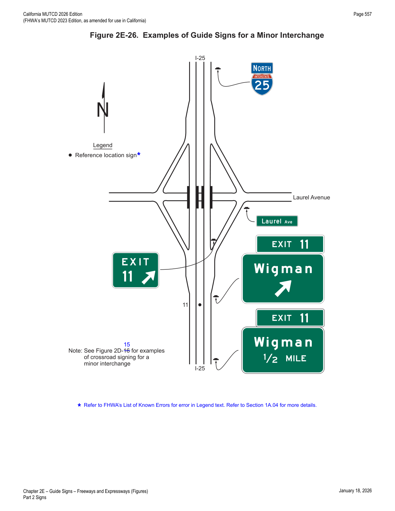
2E.31Diamond Interchange
- 01An example of guide signs for a diamond interchange is shown in Figure 2E-27.
- 02The typical diamond interchange ramp departs from the main roadway such that a speed reduction generally is not necessary to negotiate the exit maneuver. Section 2C.12 contains provisions for an Advisory Exit Speed (W13-2) sign where a speed reduction is necessary.
- 03When a speed reduction is not necessary, an Advisory Exit Speed sign should not be used.
- 04The Advisory Exit Speed sign, if used, should be located along the deceleration lane or ramp so it is visible far enough in advance to allow deceleration before the exit curve. Use and placement should otherwise comply with Section 2C.12.
- 05A Stop Ahead (W3-1) or Signal Ahead (W3-3) warning sign (Section 2C.35) may be placed, where engineering judgment indicates a need, along the ramp in advance of the crossroad.
- 06When used on two-lane ramps, Stop Ahead or Signal Ahead signs should be used in pairs, one on each side of the ramp.
- 07Where the exit ramp allows traffic to turn in either direction onto the crossroad, a Destination (D1 series) sign (Section 2D.36) including each destination displayed on the Advance, Exit Direction, and Supplemental guide signs along the main roadway for that exit should be placed along the ramp.
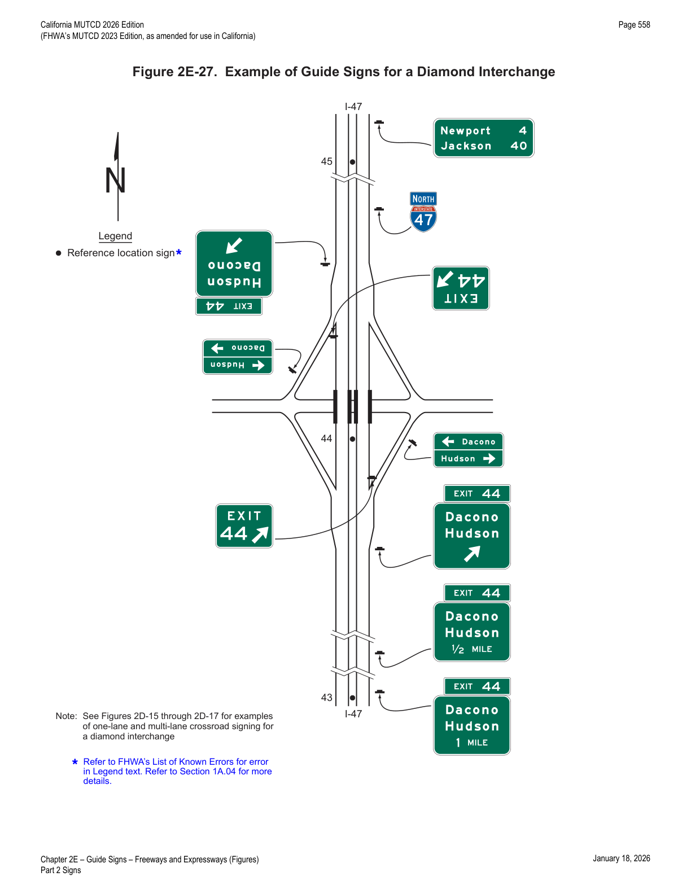
2E.32Diamond Interchange in Urban Area
- 01An example of guide signs for a diamond interchange in an urban area is shown in Figure 2E-28, including the use of a Community Interchanges Identification sign (Section 2E.52) which might be useful if two or more interchanges serve the same community.
- 02In urban areas, street names are often displayed as the principal message in destination signs.
- 03If interchanges are too closely spaced to locate Interchange Advance guide signs at the distances specified in Section 2E.23, they may be placed closer to the exit with the distances displayed adjusted accordingly.
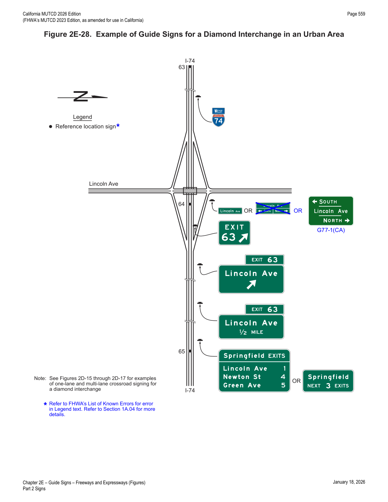
2E.33Cloverleaf Interchange
- 01A cloverleaf interchange has two exits for each direction of travel. The exits are closely spaced and have common Advance guide signs. An example is shown in Figure 2E-29.
- 02The Advance guide signs should include two place names, one per exit ramp, with the name of the place served by the first exit on the upper line.
- 03An overhead guide sign assembly shall be placed at the theoretical gore of the first exit ramp, with an Exit Direction sign for the first exit and an Interchange Advance guide sign for the second exit (Figure 2E-29). The second exit shall be indicated by an overhead Exit Direction sign over the auxiliary lane.
- 04Interchanges with more than one exit from the main roadway shall be numbered per Section 2E.22 with an appropriate suffix.
- 05Diagrammatic Advance signs shall not be used for cloverleaf interchanges except as otherwise provided in Section 2E.41.
- 06Where the main roadway passes under the crossroad and the exit roadway is beyond the overcrossing structure, placement of the overhead Exit Direction sign for the second exit should comply with Section 2E.25 (Figure 2E-29).
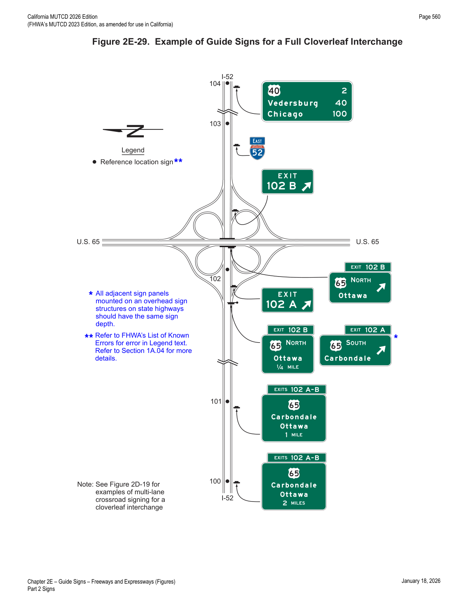
2E.34Cloverleaf Interchange with Collector-Distributor Roadways
- 01An example of guide signs for a full cloverleaf interchange with collector-distributor roadways is shown in Figure 2E-30.
- 02Destination names and route numbers on the collector-distributor roadway signing should be the same as those used on the upstream Interchange Advance guide signs on the main roadway.
- 03Exit Direction signs at exits from the collector-distributor roadways shall be overhead and located at the theoretical gore of the collector-distributor roadway and the exit ramp.
- 04Exits from collector-distributor roadways should be numbered with an appropriate suffix. If numbered, the main roadway Interchange Advance guide and Exit Direction signs should include, in addition to two place names, their corresponding exit number/suffixes with the plural EXITS in the Exit Number (E1-5P series) plaque. If only the main roadway exit is numbered, those signs should use the singular EXIT. If exit numbering is not used, the main roadway Interchange Advance guide signs should use the singular EXIT in the distance messages.
2E.35Partial Cloverleaf Interchange
- 01An example of guide signs for a partial cloverleaf interchange is shown in Figure 2E-31.
- 02For a partial cloverleaf with only one exit roadway in a direction of travel, where the main roadway passes under the crossroad and the exit roadway is beyond the overcrossing structure, the overhead Exit Direction sign should be placed on the overcrossing structure (Figure 2E-31) or a separate structure immediately in front of it.
- 03Partial cloverleaf interchanges with successive exit ramps from the same direction of travel are signed the same as cloverleaf interchanges for that direction (Section 2E.33).
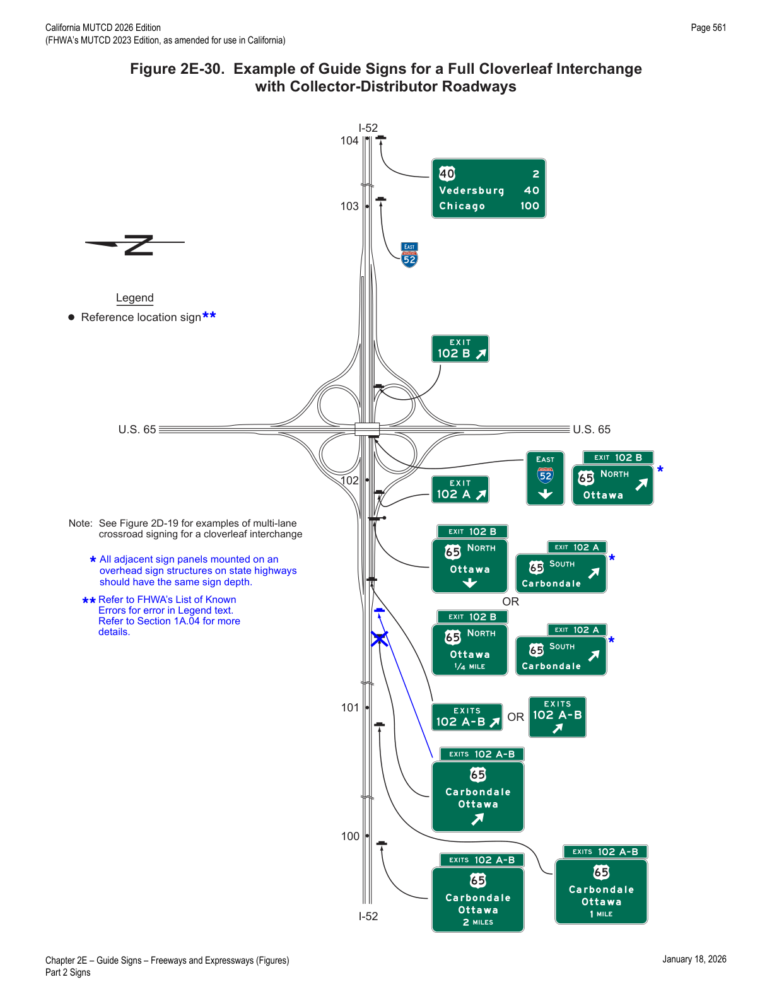
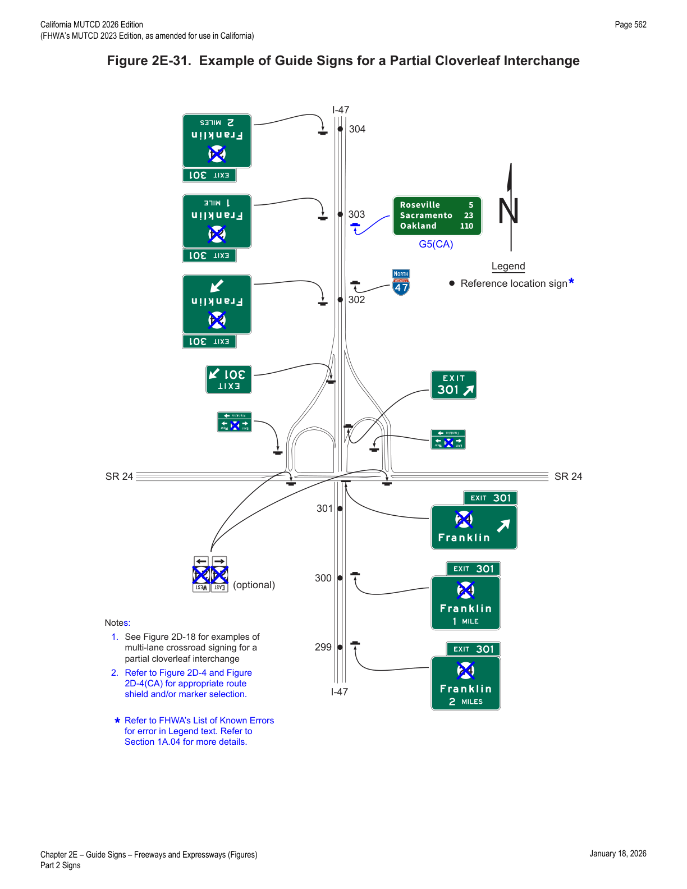
2E.36Collector-Distributor Roadways for Successive Interchanges
- 01Examples of guide signs for a collector-distributor roadway that provides access to multiple interchanges are shown in Figure 2E-32. Section 2J.09 contains provisions for General Service and Specific Service signs.
- 02Where access to successive interchanges is provided from a single collector-distributor roadway, the number of lines of destination information on the main roadway major guide signs should comply with Section 2E.15. Additional destinations should be displayed on Supplemental guide signs (Section 2E.51) on the approach to the collector-distributor roadway.
- 03Where exit numbering is used, the exit numbers for exits accessed from the collector-distributor roadway should be displayed on the main roadway guide signs.
- 04An Exit Gore sign (Section 2E.26) should be placed in the gore where the collector-distributor roadway departs from the main roadway.
- 05Interchange guide signing along the collector-distributor roadway should comply with the provisions for interchange signing in this Chapter.
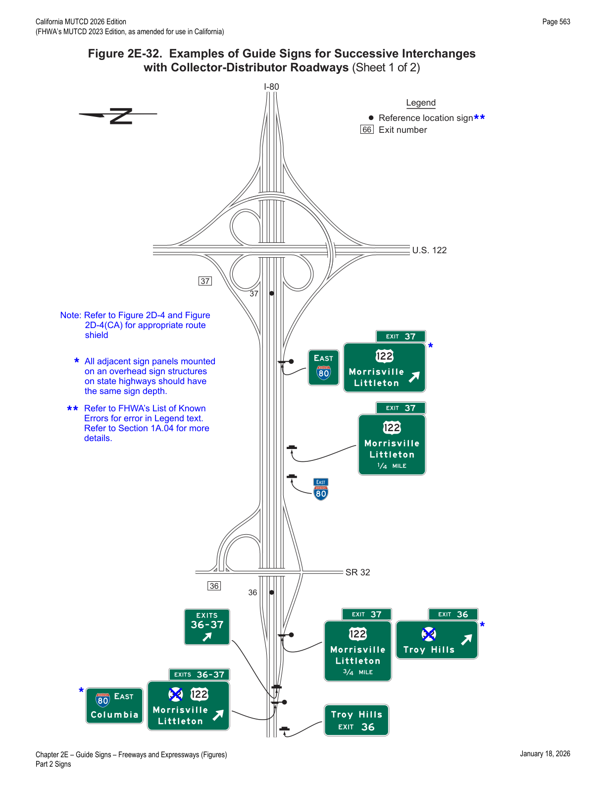
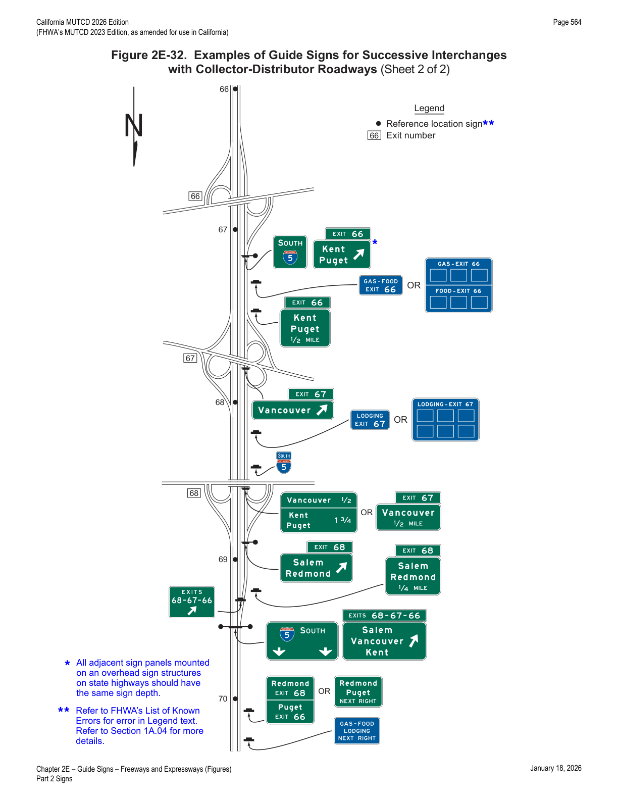
2E.37Freeway-to-Freeway Interchanges
- 01Freeway-to-freeway interchanges are major decision points where the effect of taking a wrong ramp cannot easily be corrected — reversing direction on the connecting freeway or reentering to continue on the intended course is usually not possible. Examples are shown in Figure 2E-33.
- 02Sign messages should contain only the route shield, cardinal direction, and the name of the next control city on the route. Arrows should point as indicated in Section 2D.08, except where Overhead Arrow-per-Lane or Diagrammatic Advance signs are used per Sections 2E.39 through 2E.41.
- 03An off-route movement is the movement not following the through route; drivers might not expect it to be to the left or an optional lane at a split (Figures 2E-38 and 2E-39). Section 2E.22 covers the Left Exit Number plaque at splits where the off-route movement is to the left. Sections 2E.39 and 2E.40 cover Overhead Arrow-per-Lane guide signs for splits/multi-lane exits with an option lane. Section 2E.41 covers Diagrammatic Advance guide signs for complex ramp departure geometry.
- 04The roadway for the off-route shall be signed as an exit. If exit numbering is used, signs shall comply with Section 2E.22. Distance messages on Advance guide signs shall comply with Section 2E.23.
- 05Overhead signs shall be used at a distance of 1 mile and at the theoretical gore of each connecting ramp. When Overhead Arrow-per-Lane or Diagrammatic Advance guide signs are used, they shall be located per Sections 2E.40 and 2E.41 respectively.
- 06The Advance guide signs at the ½-mile and 2-mile locations may also be mounted overhead.
- 07An Advisory Exit Speed (W13-2) sign should be used where an engineering study shows a speed reduction message is necessary for ramp signing (Section 2C.12).
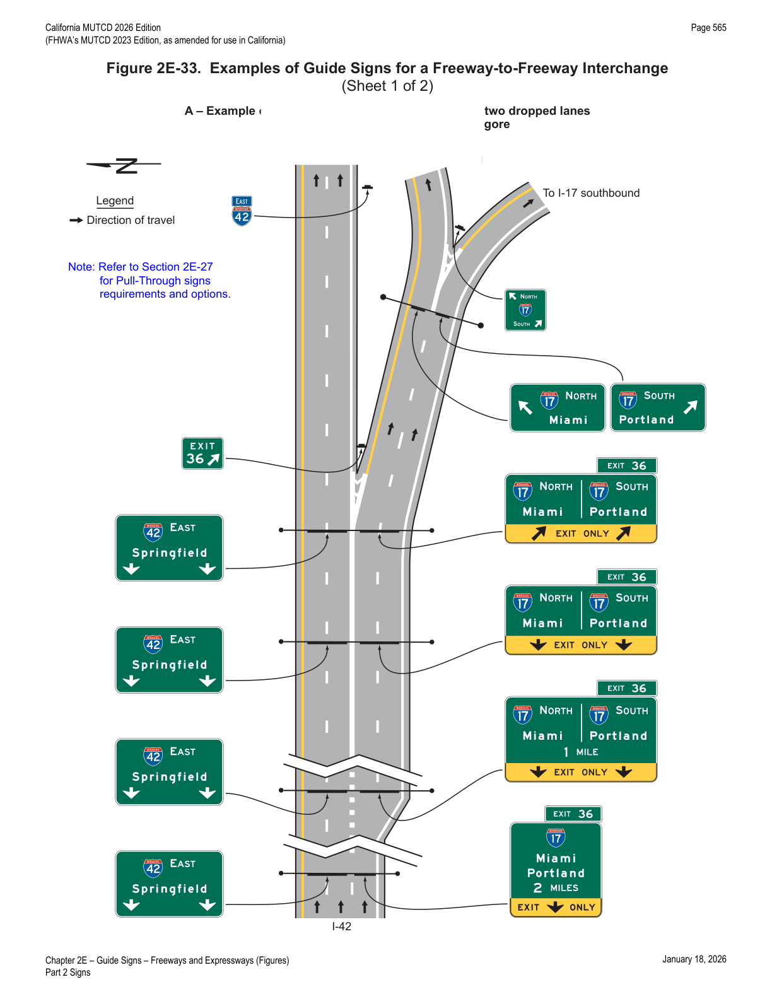
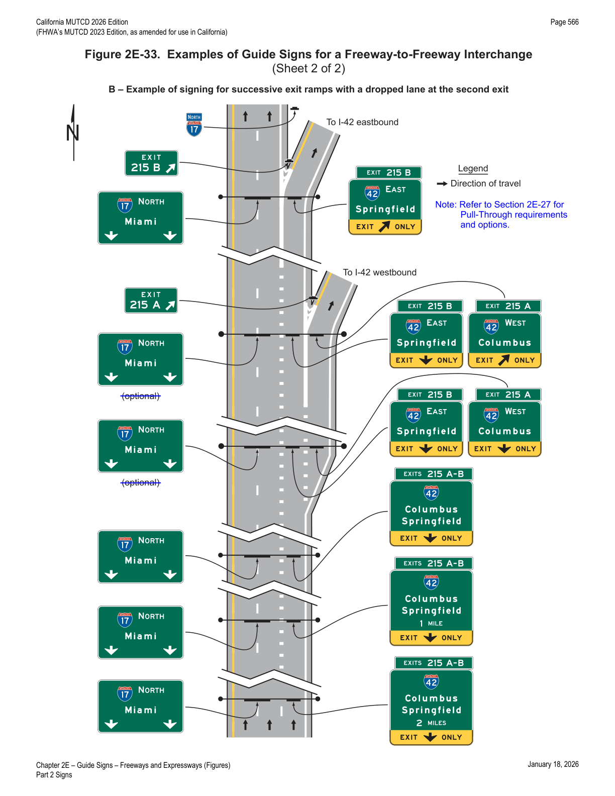
2E.38Freeway Split with Dedicated Lanes
- 01Signing for freeway splits with dedicated lanes shall use the sign designs shown in Figure 2E-34.
- 02The arrows on each Interchange Advance guide sign shall match the number of lanes present at the location of the Advance guide sign.
- 03The signs for this application shall be mounted overhead. When arrows are used, each arrow shall be located over the approximate center of the lane to which it applies.
- 04Where one roadway of the split carries the through route, the other roadway shall be signed as an exit. If exit numbering is used, signs shall comply with Section 2E.22. Distance messages shall comply with Section 2E.23.
- 05The number and location of Advance guide signs shall comply with Section 2E.23.
- 06The Exit Direction and Pull-Through signs should be located at the theoretical gore.
- 07The Exit Direction and Pull-Through signs should display down arrows if the alignment is straight, or diagonally upward-pointing directional arrows if the alignment is curved (Section 2D.08).
- 08The Exit Direction sign shall contain the EXIT ONLY (E11-1 series) sign panel (Section 2E.28).
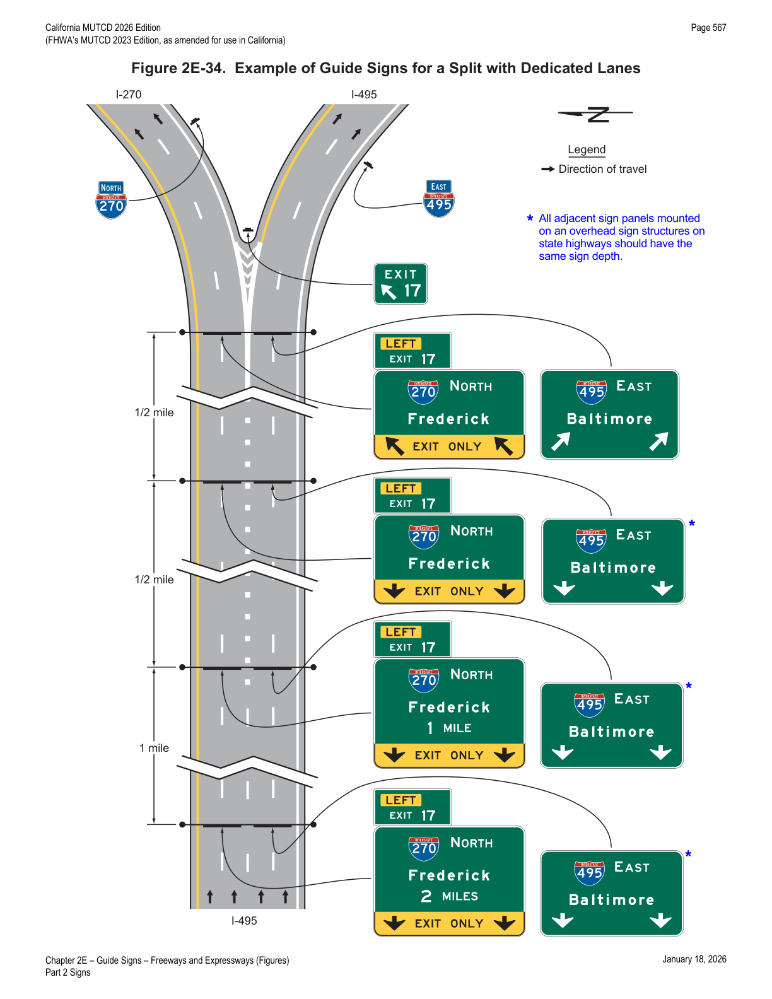
2E.39Signing for Option Lanes at Splits and Multi-Lane Exits
- 01Some freeway/expressway splits or multi-lane exit interchanges contain an interior option lane serving both movements, where traffic can leave the route or remain on it (or choose either destination at a split) from the same lane.
- 02On freeways and expressways, Overhead Arrow-per-Lane guide sign designs (Sections 2E.40 and 2E.41) shall be used for all multi-lane exits at major interchanges (Section 2E.11) that have an optional exit lane also carrying the through route (Figures 2E-36, 2E-36(CA), 2E-37, and 2E-42) and for all splits with an option lane (Figure 2E-38). Overhead Arrow-per-Lane guide signs shall not be used on freeways/expressways for any other exit or split types, including single-lane exits and splits without an option lane.
- 02aRefer to FHWA's List of Known Errors for errors in Paragraph 2 text. Refer to Section 1A.04 for more details.
- 03The Overhead Arrow-per-Lane guide sign design (Section 2E.40) should also be considered for multi-lane exits with an option lane at intermediate interchanges (Section 2E.11), based on factors such as the need to optimize mainline operation by maximizing option-lane usage, the extent of high-exit-volume periods, and the nature of traffic primarily using the option lane during high-volume periods.
- 04Signing at intermediate interchanges with an optional exit lane where the Overhead Arrow-per-Lane design is not warranted, or at multi-lane exits at minor interchanges with an optional exit lane, should use signing per Section 2E.42.
2E.40Design of Overhead Arrow-per-Lane Guide Signs for Option Lanes
- 01Overhead Arrow-per-Lane guide signs (Figure 2E-35) are used where an option lane is present at freeway/expressway multi-lane exit interchanges and splits. They display an upward-pointing arrow above each lane conveying the direction(s) served at the departure point. Where an option lane is present, these signs have been shown superior to other designs because they convey positive direction about which destination/direction each approach lane serves, particularly the option lane, which is otherwise difficult to clearly sign.
- 02Overhead Arrow-per-Lane guide signs per Section 2E.39 shall be used at all new or reconstructed freeway/expressway locations and where replacement of existing sign support structures is necessitated by reconstruction. The sign at the exit or split shall be located at or immediately near the point where exiting lanes begin to diverge from through lanes (or, for a split, where approach lanes begin to diverge), preserving the relation of arrows to their lanes. It shall not be located at or near the theoretical gore.
- 03At existing or non-reconstructed locations where an overhead Exit Direction sign exists at the theoretical gore and the existing sign support structure is retained, that Exit Direction sign may continue to be used in conjunction with replacement of the advance signs using the Overhead Arrow-per-Lane design.
- 04If an existing Exit Direction sign is retained per Paragraph 3, an Overhead Arrow-per-Lane guide sign shall not be used at that location at or near the theoretical gore. New installations of Exit Direction and Pull-Through signs shall not be permitted in conjunction with Overhead Arrow-per-Lane guide signs on new or reconstructed facilities.
- 05Overhead Arrow-per-Lane guide signs should be located at approximately ½ mile and 1 mile in advance of the exit or split, and at approximately 2 miles in advance where space is available and conditions allow.
- 06Overhead Arrow-per-Lane guide signs shall be designed per: (A) except as provided in Section 2E.42 for partial-width signs, the sign shall include an upward-pointing (vertical, curved, or bifurcated) arrow for each approach lane; (B) each arrow's shaft shall be located over the approximate center of its lane; (C) arrows for continuing through lanes shall be vertically upward-pointing (Figure 2E-36 and 2E-36(CA)) unless the through lanes are on significantly curved alignment beyond the theoretical gore (Figure 2E-37); (D) the arrow for a lane that must exit shall curve in the exit direction and be accompanied by black-on-yellow EXIT (E11-1a) and ONLY (E11-1b) sign panels adjacent to the lower end of the arrow shaft — these panels shall not be used for a split of two overlapping routes where neither diverging route is designated as an exit; where through lanes curve and the exit continues straight, upward vertical arrows shall be used for the exit movement and curved arrows for the through movement (Figure 2E-37); (E) the arrow for an optional exit lane also carrying the through route shall have a single shaft bifurcating into a vertical arrow and a curving arrow matching the through/exit lane configuration; (F) for splits with an option lane, the arrow for the lane from which either split direction can be accessed shall have a single shaft bifurcating into two upward-pointing curving arrows (Figure 2E-38); (G) a vertical white line shall separate the route shields/destinations for the two diverging movements; (H) the distance to the exit or split shall be displayed below the off-movement destination on advance signs at the 1-mile and 2-mile locations; (I) the number of lanes displayed shall correspond to the number of lanes at that sign's location — an advance sign shall not depict lanes added downstream; (J) for numbered exits, the Exit Number (E1-5P) or Left Exit Number (E1-5bP) plaque shall be used at the top (above and abutting), per Section 2E.23; for unnumbered left exits, a LEFT (E1-5mP) plaque shall be added at the top left-hand edge.
- 06aThe ONLY (E11-1b) sign panel shall not be used without the EXIT (E11-1a) sign panel.
- 07Overhead Arrow-per-Lane guide signs should additionally be designed so: (A) no more than one destination is displayed per movement, and no more than two destinations per sign; (B) the arrowhead(s) for the diverging movement should be positioned lower on the sign than the arrowhead(s) for the movement continuing straight ahead, independent of which movement carries the through route — for freeway/expressway splits (rather than exits), arrowheads should be at approximately the same height; (C) route shields, cardinal directions, and destinations should be positioned so they are clearly related to the arrowhead(s) they apply to; (D) the cardinal direction should be adjacent to the route shield for exits/splits leading in a single cardinal direction; (E) the vertical white line separating the diverging movements should not descend below the top of the through-lane arrowheads, and should be positioned approximately halfway between the diverging arrowheads for the optional movement lane (see Figure 2E-35).
- 08Overhead Arrow-per-Lane guide signs shall not be used to depict a downstream split of an exit ramp on a sign located on the mainline.
- 09Specific guidelines for more detailed design of Overhead Arrow-per-Lane guide signs are in the "Standard Highway Signs" publication (Section 1A.05).
- 10The arrow heights for Overhead Arrow-per-Lane guide signs on freeways and expressways shall be as shown in Table 2E-6.
- 11Where extra emphasis of an especially low advisory ramp speed is needed, an EXIT XX MPH (E13-2) sign panel (Figure 2E-14) may be placed below the applicable destination legend to supplement, not replace, the exit/ramp advisory speed warning signs.
- 12Warning Beacons complying with Section 2E.25 may be used with the E13-2 sign panel.
- 13An example of guide signing for a narrow gore at a split with an option lane is shown in Figure 2E-39, and for a narrow gore at a two-lane exit with an option lane in Figure 2E-40.
- 14Where there is 800 feet or more between the beginning of the lane diverge and the theoretical gore, signs indicating the destinations allowed by each lane may be added near the theoretical gore to reinforce positive guidance (Figures 2E-39 and 2E-40).
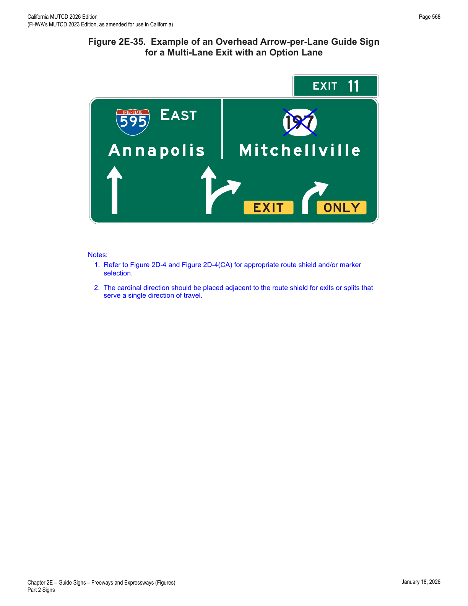
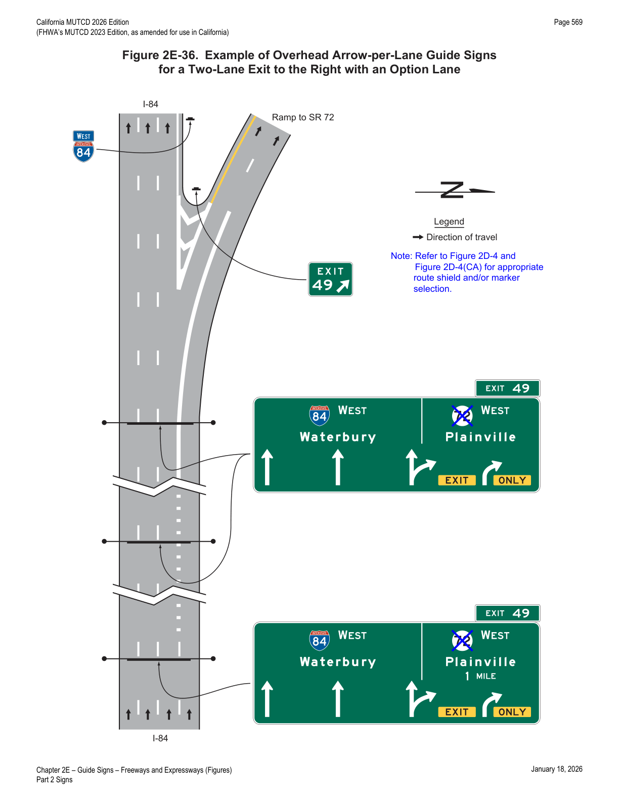
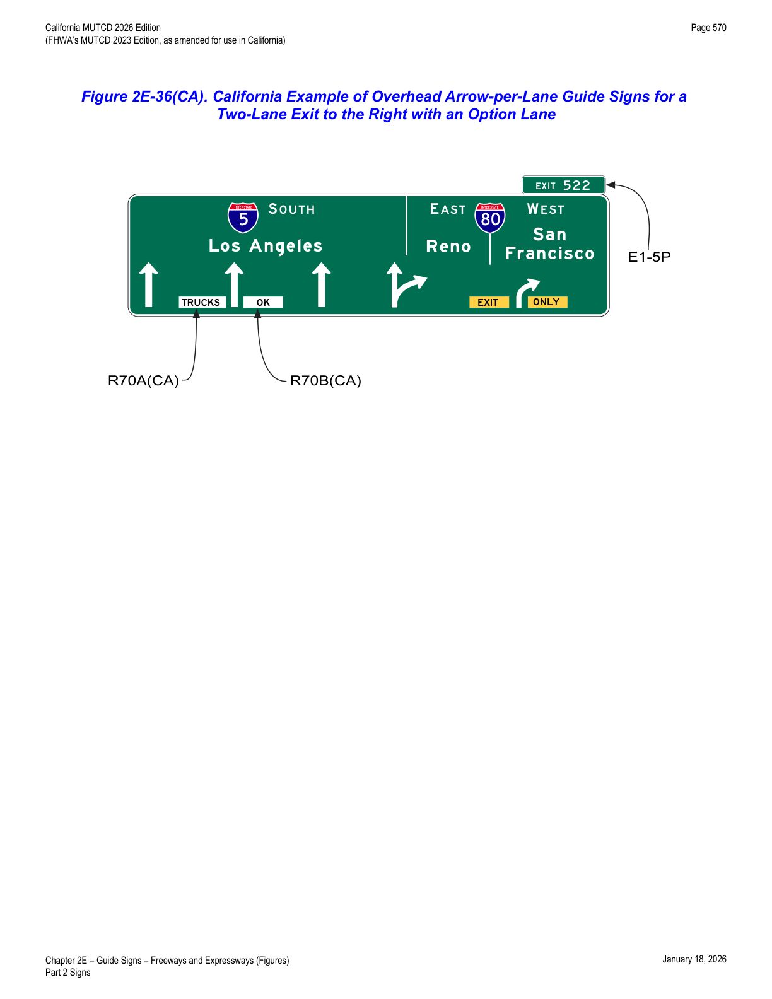
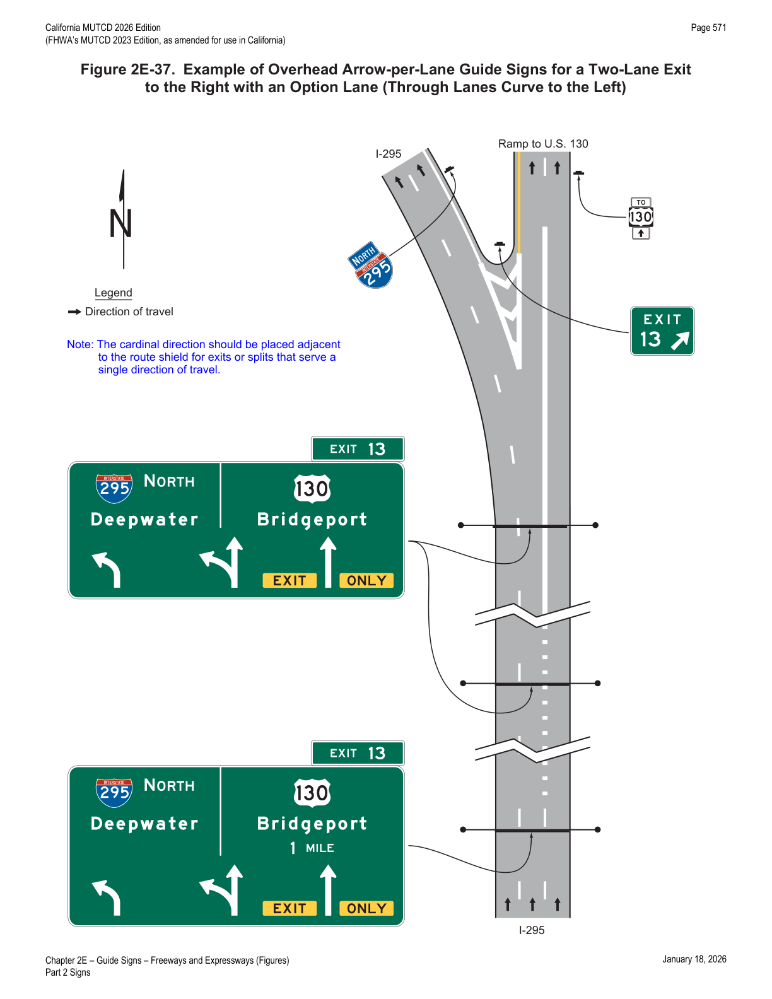
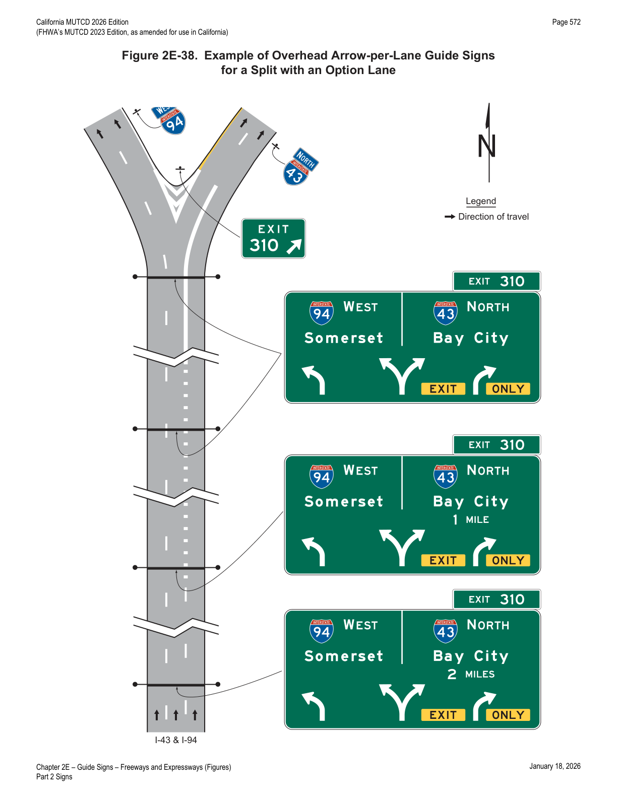
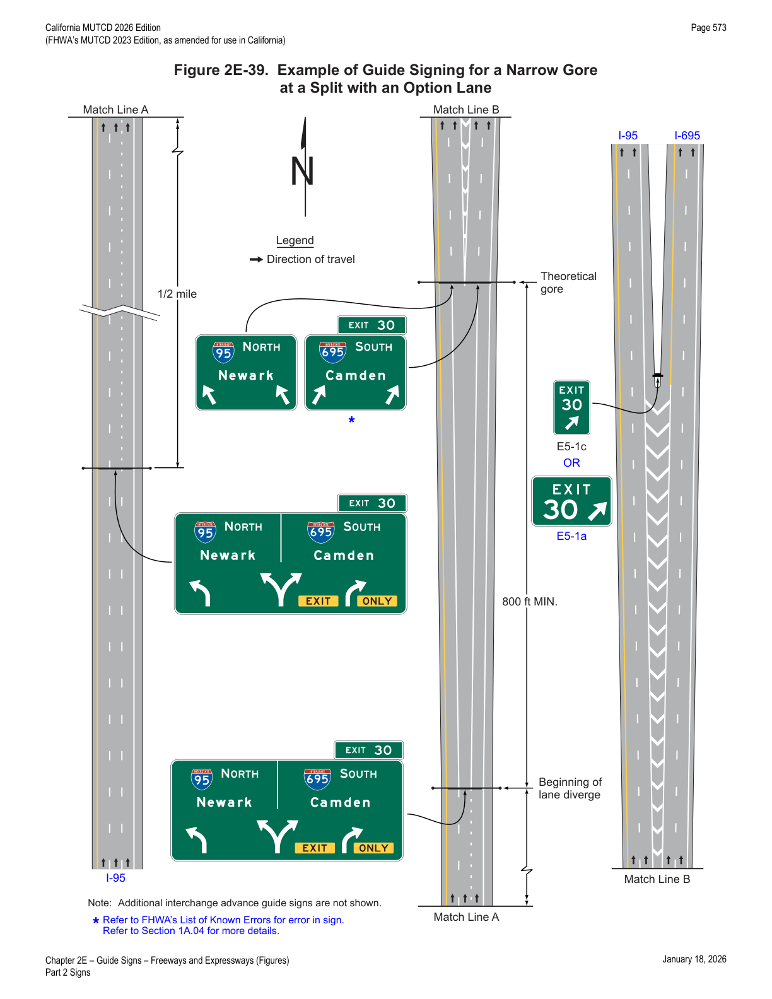
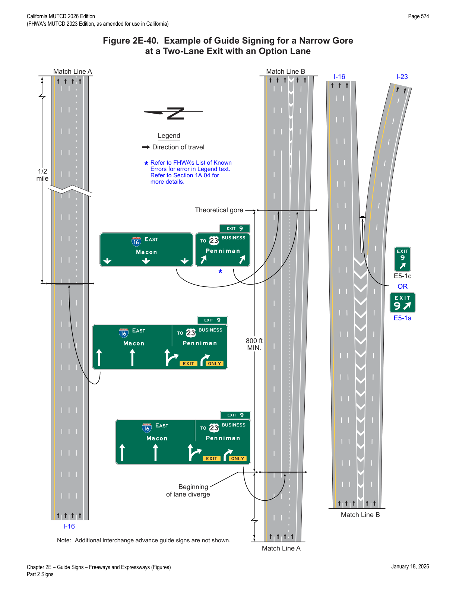
2E.41Design of Freeway and Expressway Diagrammatic Advance Guide Signs
- 01The Diagrammatic Advance guide sign (Figure 2E-41) shows a simplified graphic view of the exit departure arrangement relative to the main highway at an interchange, to provide advance notice of complex or unexpected geometry/ramp departures and/or depict successive decision points where added context helps interpret subsequent primary Interchange Advance guide signs. Unlike Diagrammatic signs in previous Manual editions, it does not depict which or how many specific lanes serve a particular destination, or lanes added/reduced.
- 02A Diagrammatic Advance guide sign may be used in advance of the interchange guide sign sequence, or in lieu of an Interchange Advance guide sign located 2 miles in advance of the exit, to supplement conventional or Overhead Arrow-per-Lane guide signs used for a downstream interchange.
- 03Diagrammatic Advance guide signs shall be designed so: (A) the graphic legend is a plan view showing a simplified schematic of the relative through and off-ramp movements; (B) no symbols or route shields are used as a substitute for arrowheads; (C) they are not installed at the Exit Direction sign location (Section 2E.25); (D) the EXIT ONLY sign panel is not used on Diagrammatic Advance guide signs in advance of the interchange; (E) for numbered exits, the Exit Number (E1-5P) or Left Exit Number (E1-5bP) plaque is used at the top per Section 2E.22, and for unnumbered left exits, the LEFT (E1-5aP) plaque is used at the top left edge; (F) the graphic does not depict deceleration or auxiliary lanes; (G) arrow shafts contain no lane lines; (H) destination legends for off-movements are positioned to the side of the arrow from which the ramp departs.
- 04Diagrammatic Advance guide signs should additionally be designed so: (A) no more than one destination is displayed per movement; (B) the arrowhead for the diverging movement is positioned lower than the arrowhead for the movement continuing straight ahead, independent of which carries the through route (Figure 2E-42) — for splits (rather than exits), arrowheads should be at approximately the same height; (C) arrow shaft widths do not vary by movement; (D) route shields, cardinal directions, and destinations are positioned clearly related to the arrowhead(s), with the off-movement arrowhead pointing toward the route shield or, for unnumbered routes, the upper destination legend line; (E) for exits/splits leading in a single direction, the cardinal direction is placed adjacent to the route shield and the destination below it; (F) where two exits are displayed, the through-route control destination is omitted; (G) the distance legend is placed below the exit destination legend — for splits where neither direction carries a through route, centered below the diagrammatic arrow; where successive exits from the same side are displayed, the distance is below the first exit's destination legend with the second exit's distance omitted; where successive exits from opposite sides are displayed, the first exit's distance is centered below the diagrammatic arrow with the second omitted.
- 05Diagrammatic Advance guide signs shall not be used at cloverleaf interchanges to depict separate downstream departures from a collector-distributor roadway.
- 06Diagrammatic Advance guide signs located on the main roadway shall not be used to depict a downstream split of an exit ramp.
- 07Specific guidelines for more detailed design of Diagrammatic Advance guide signs are in the "Standard Highway Signs" publication (Section 1A.05).
- 08Where extra emphasis of an especially low advisory ramp speed is needed, an EXIT XX MPH (E13-2) sign panel (Figure 2E-14) may be placed below the applicable destination legend to supplement, not replace, the exit/ramp advisory speed warning signs.
- 09Warning Beacons complying with Section 2E.25 may be used with the E13-2 sign panel.
- 10Diagrammatic Advance guide signs may be used on any class of roadway and may be modified to depict relative movements for intersections on conventional roads.
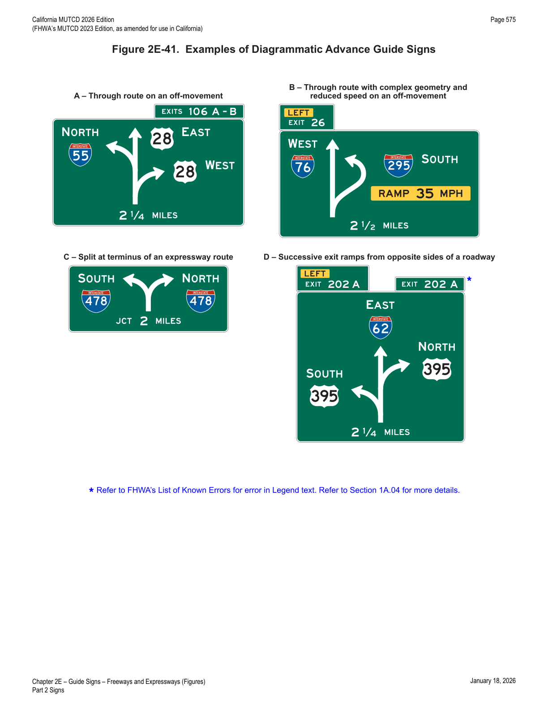
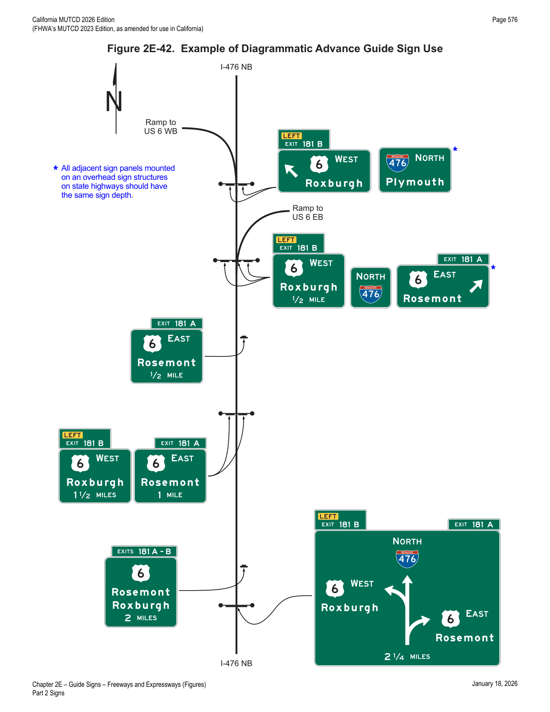
2E.42Signing for Intermediate and Minor Interchange Multi-Lane Exits with an Option Lane
- 01Intermediate and minor multi-lane exits might have an operational need for an option lane only during peak periods when excessive queues might otherwise develop. In such cases, full-width Overhead Arrow-per-Lane guide signing (Sections 2E.39 and 2E.40) might not be practical, depending on option-lane usage and nearby interchange spacing, particularly in non-rural areas.
- 02When full-width Overhead Arrow-per-Lane guide signing is not practical, signing for an intermediate or minor interchange with a multi-lane exit and an option lane also carrying the through route should use a partial-width form of the Overhead Arrow-per-Lane guide sign (Figures 2E-43 through 2E-45(CA)), displaying arrows only for the option lane and mandatory exit lane(s), using the same bifurcated arrow type for the option lane and curved arrow type for the exit-only lane(s) as the full-width design. The exit-movement legend should be clearly aligned with the arrows pointing toward the exit, not the vertical arrowhead of the bifurcated through-movement arrow.
- 03The through route and/or destination shall not be displayed on the partial-width Overhead Arrow-per-Lane guide sign.
- 04Partial-width Overhead Arrow-per-Lane signs shall be located per Section 2E.40 for full-width signs (Figures 2E-44 and 2E-45).
- 05At an intermediate or minor interchange with a multi-lane exit and an option lane also carrying the through route, where full-width Overhead Arrow-per-Lane guide signing is not practical, conventional signing per Paragraphs 7 through 9 may be used (Figures 2E-46 and 2E-47).
- 06When either full-width or partial-width Overhead Arrow-per-Lane signing is used at existing or non-reconstructed locations where an overhead Exit Direction sign exists at the theoretical gore and the existing sign support structure is retained, that Exit Direction sign may continue to be used in conjunction with replacement of the advance signs using the partial-width design (Figure 2E-44).
- 06aRefer to FHWA's List of Known Errors for an error in Paragraph 6 text. Refer to Section 1A.04 for more details.
- 07When conventional signing is used, the option lane should not be signed on the Interchange Advance guide signs. For exits involving an added auxiliary lane not present at the Interchange Advance guide sign locations, but without a lane drop (Figure 2E-47), a sequence of post-mounted or overhead-mounted Interchange Advance guide signs should be used, located per interchange classification (Section 2E.11). The Exit Direction sign should be located at the theoretical gore, displaying a diagonally upward-pointing arrow above each departing lane, without the EXIT ONLY legend.
- 08For interchanges that also have a lane drop (Figure 2E-46), the Interchange Advance guide and Exit Direction signs should follow Section 2E.28; the Exit Direction sign should be at the theoretical gore and contain the EXIT ONLY (E11-1e) sign panel.
- 09Where the modified Overhead Arrow-per-Lane guide signs are not used, the presence of the option lane should be conveyed by post-mounted lane-use (R3-8 series) signs (Section 2B.30), sized appropriately for conspicuity, located in succession with the Interchange Advance guide signs where the option and exit lanes have developed (Figure 2E-46). Where the exiting lane(s) have not developed and the option lane is created by an auxiliary lane that exits, R3-8 signs should be located only adjacent to where the lanes are fully developed, not in advance of or along the transition (Figure 2E-47).
- 09aRefer to FHWA's List of Known Errors for an error in Paragraph 9 text. Refer to Section 1A.04 for more details.
- 10The use of a down arrow on overhead freeway/expressway guide signs has been shown to be misinterpreted by road users as an indication of a dedicated lane.
- 11Interchange Advance guide signs that are mounted overhead shall not display a down arrow over an option lane.
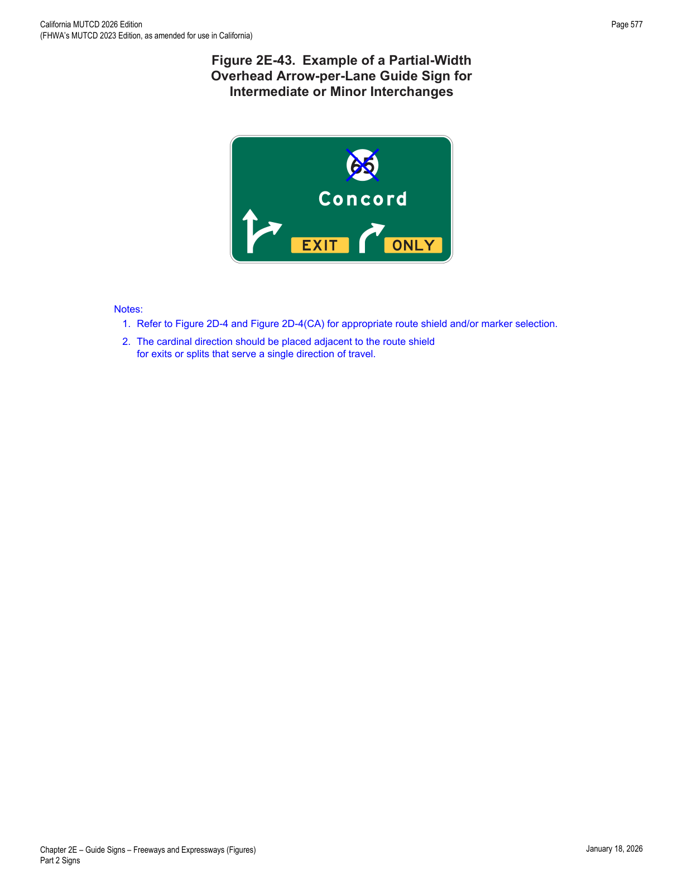
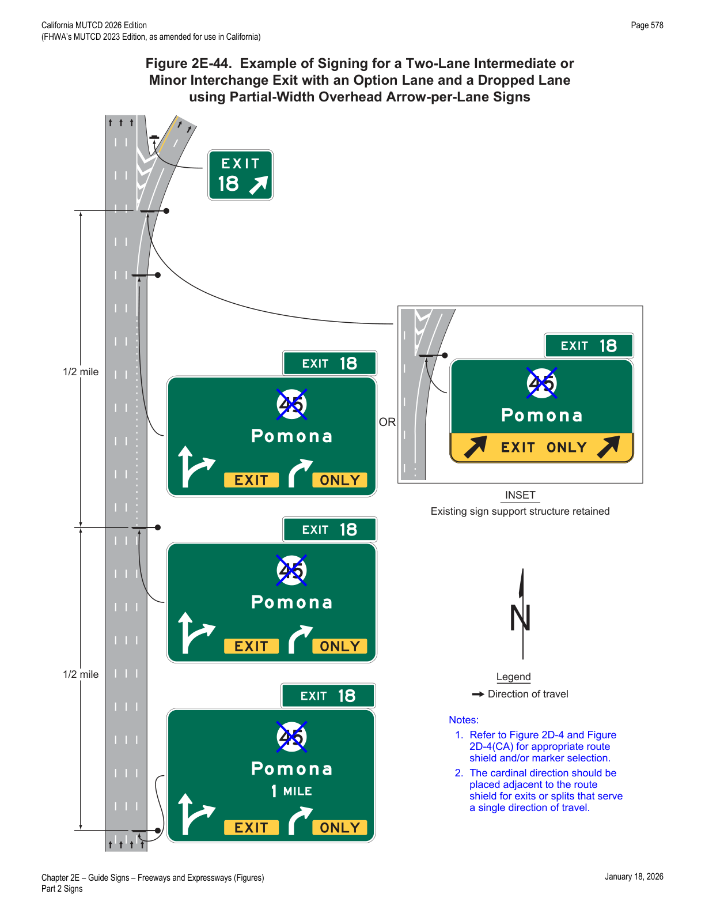
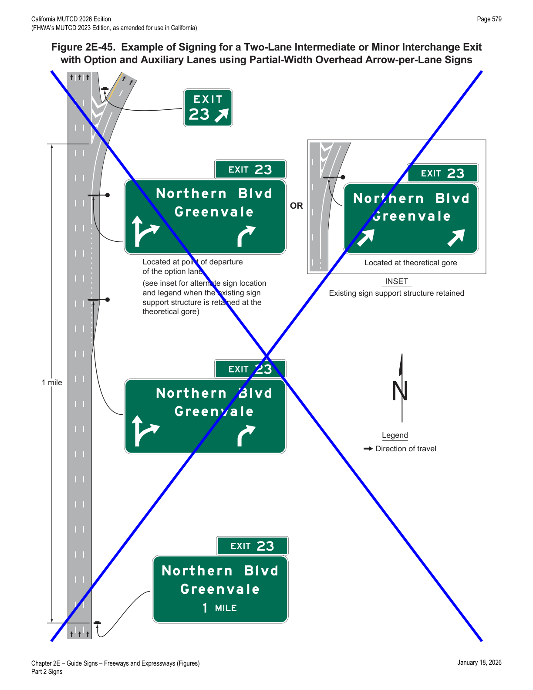
2E.43Number of Signs at an Overhead Installation and Sign Spreading
- 01If overhead signs are warranted (Section 2A.13), the number of signs at these locations should be limited to only those essential in communicating pertinent destination information. Exit Direction signs for a single exit and Interchange Advance Guide signs should have only one sign with one or two destinations. Regulatory signs, such as speed limits, should not be used with overhead guide sign installations. Because road users have limited time to read/comprehend messages, there should not be more than three guide signs displayed at any one location on the overhead structure or its support.
- 01aRefer to FHWA's List of Known Errors for an error in Paragraph 1 text. Refer to Section 1A.04 for more details.
- 02At overhead locations, more than one sign may be installed to advise of a multiple exit condition. If the ramp or crossroad has complex/unusual geometrics, additional signs with confirming messages may be provided.
- 03Sign spreading is a concept where major overhead signs are spaced so road users are not overloaded with a group of signs at a single location. Figure 2E-48 illustrates an example.
- 04Where overhead signing is used, sign spreading should be used at all single-exit interchanges and to the extent possible at multi-exit interchanges, accomplished by: (A) the Exit Direction sign should be the only guide sign used near the gore (other than the Exit Gore sign), located overhead near the theoretical gore, generally on an overhead sign support structure; (B) the Interchange Advance guide sign for the next interchange exit should be placed near the crossroad location — if the crossroad goes over the mainline, on the overcrossing structure or a separate structure immediately in front of it.
2E.44Closely-Spaced Interchanges
- 01Section 2E.43 contains information on sign spreading where the Exit Direction sign and the Interchange Advance guide sign for the next interchange are mounted overhead. Sign spreading is particularly beneficial where interchanges are closely spaced and overhead signing is used with Interchange Sequence signs (Paragraph 2).
- 02Interchange Sequence signs (Section 2E.24) should be used at closely-spaced interchanges, identifying and showing street names and distances for the next two or three exits (Figure 2E-11).
- 03Interchange Advance guide signs for closely-spaced interchanges shall show information for only one interchange.
2E.45Guide Signing in Tunnels and Similar Structures
- 01Applying freeway/expressway guide sign provisions in tunnels and similar structures presents unique challenges from extended, continuous constrained vertical/horizontal clearances. This is particularly evident where interchange exit ramps are inside the tunnel requiring guide signing, so typical layouts might not always be usable; interchange guide signs might need to be limited to one destination, with others on Supplemental guide signs (Section 2E.51). Acceptable modification methods are in Paragraph 2.
- 02Overhead-mounted guide signs in tunnels, or other structures with extended constrained clearances, may be modified to accommodate limited vertical clearance: (A) sign legend elements may be arranged side by side, e.g., route shields to the left of the destination instead of above; (B) the Exit Number plaque (Section 2E.22) may be placed at the right-hand edge (right exits) or left-hand edge (left exits) instead of the top edge, with reduced letter height not less than 6 inches for EXIT(S) and not less than 12 inches for numerals/suffixes; (C) destination and roadway names may be displayed in reduced letter heights not less than 10.67 inches when acceptable given reduced speed and other factors, maintaining adequate space for legibility; (D) unusually long names that cannot be shortened/abbreviated may use Series D letters in lieu of Series E (modified).
- 02aRefer to FHWA's List of Known Errors for an error in Paragraph 2, Item C text. Refer to Section 1A.04 for more details.
- 03Applicability of Paragraph 2 shall be limited to signs within the limits of the tunnel or other similar structure and shall not extend to the approaches or departures.
- 04Unlike typical guide signs exposed to rain, guide signs in tunnels accumulate grime and residue quickly, reducing visual contrast and retroreflectivity, so they generally need more maintenance.
- 05Overhead signs in tunnels should have external or internal illumination to ensure adequate visibility between scheduled maintenance and cleanings.
- 06One or more Interchange Sequence signs (Section 2E.24) should be used on the approach to the tunnel entrance to display distances to the next interchanges with exit ramps inside the tunnel or immediately following it.
- 07Supplementary pavement markings (word, arrow, and/or route shield markings) should be considered inside the tunnel in addition to basic lane and edge line markings.